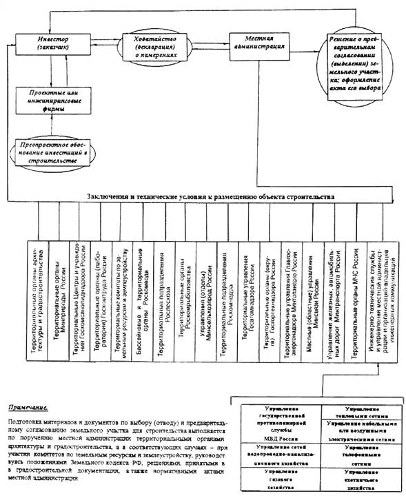

МИНСТРОЙ РОССИИ
Государственное предприятие
Центр научно-методического обеспечения инженерного
сопровождения инвестиций в строительстве
ГП «ЦЕНТРИНВЕСТ проект»
СБОРНИК
разъяснений отдельных положений
и содержания пунктов инструкции
о порядке разработки, согласования,
утверждения и составе проектной документации
на строительство предприятий, зданий и
сооружений
СНиП 11-01-95
(Вопросы и ответы)
Издание 1
МОСКВА 1997
СОДЕРЖАНИЕ
Сборник разъяснений отдельных положений и содержания пунктов Инструкции СНиП 11-01-95, подготовленный ее разработчиком - ГП «ЦЕНТРИНВЕСТпроект» на основе ответов на вопросы, поступившие от министерств, ведомств, заказчиков проектов, проектных организаций, организаций, подведомственных органам государственного надзора и служб местных органов самоуправления (администрации), а также подрядных строительных организаций, включает разъяснения и уточнения отдельных положений и пунктов Инструкции.
Принципиальные положения помещенных в Сборник разъяснений согласованы с Департаментом развития научно-технической политики и проектно-изыскательских работ Минстроя России.
В состав Сборника включены также копии отдельных основополагающих законодательных актов Правительства России и документов Минстроя и других ведомств Российской Федерации, регламентирующих вопросы, связанные с проектированием и строительством объектов на территории России.
Минстрой России Постановлением от 30.06.95 г. № 18-64 принял и ввел в действие с 1 июля 1995г. СНиП 11-01-95 «Инструкция о порядке разработки, согласования, утверждения и составе проектной документации на строительство предприятий, зданий и сооружений» взамен ранее действующих СНиП 1.02.01-85.
Положения Инструкции соответствуют новым экономическим (рыночным) условиям хозяйствования, законодательству Российской Федерации в части проектирования и строительства объектов, изменяющейся структуре управления осуществления инвестиционных проектов.
По мере углубления рыночных отношений в проектировании и строительстве возрастают требования к проектной документации в части применения прогрессивных решений, получения наибольшего экономического эффекта в результате реализации инвестиционных проектов, учета степени риска инвестора, изученности условий строительства и эксплуатации проектируемого объекта и др.
Инструкция предусматривает полную увязку и преемственность градостроительной, предпроектной и проектной документации, учитывает распределение полномочий между государственными органами управления, юридическими и физическими лицами, органами Госнадзора и местного самоуправления (администрации).
В общих положениях нормативного документа определена экономико-правовая роль договора (контракта), заключаемого между заказчиком и проектировщиком на выполнение проектных и других работ. Предоставлено право заказчику (инвестору) и проектировщику самостоятельно в договоре предусматривать все обязательства сторон, а также стадийность проектирования, уточнять состав и содержание проектной документации на каждом этапе, совмещать отдельные этапы (параллельное проектирование) и, тем самым, сокращать сроки разработки проектной документации.
Устанавливается, что разработка проектной документации независимо от формы собственности и источника финансирования, может осуществляться только при наличии решения органа местного самоуправления (администрации) о предварительном закреплении земельного участка для строительства объекта. Такое решение принимается на основе материалов предпроектных проработок, выдаваемых местными органами управления и надзора по результатам рассмотрения проедпроектной проработок.
Проектирование объектов строительства осуществляется юридическими и физическими лицами, получившими в установленном порядке право на соответствующий вид деятельности и, как правило, на конкурсной основе.
Стадийность проектирования жестко не регламентируются. Как правило, принимается в виде технико-экономического обоснования (ТЭО) проекта и рабочей документации или одностадийного рабочего проекта.
Разработка проекций документации на строительство объектов осуществляется, как правило, на основе утвержденных (одобренных) обоснований инвестиций в строительство предприятий, зданий и сооружений и другой предпроектной документации. В проектной документации разрабатываются и детализируются решения, принятые в предпроектной документации. И уточняются основные технико-экономические показатели.
Проектированию особой сложных и уникальных предприятий, зданий и сооружений по поручению заказчика должна предшествовать разработка соответствующими научно-исследовательскими и специализированными проектными организациями специальных технических условий, отражающих специфику их проектирования, строительства и эксплуатации.
Приоритетными при разработке проектов являются соблюдение нормативных требований, обеспечивающих безопасные и комфортные условия труда, жизнедеятельность инвалидов и престарелых, сохранения здоровья людей, охрану окружающей среды, рациональность и надежность возводимых зданий и сооружений.
В Инструкции приведены требования и рекомендации по составу и содержанию разделов проектной документации.
Проектная документация на строительство предприятий, зданий и сооружений, разработанная в соответствии с государственными нормами, стандартами и требованиями органов государственного надзора и заинтересованных организаций, прилагаемых к Акту о выборе площадки (трассы) для строительства, что должно быть удостоверено соответствующей записью главного инженера, главного архитектора, дополнительному согласованию не подлежит, за исключением случаев, предусмотренных законодательством Российской Федерации.
Обоснованные отступления от требований государственных нормативных документов, допускаются только при наличии разрешения органов, которые утвердили и (или) ввели в действие эти документы.
Проекты, рабочие проекты на строительство объектов, независимо от источника финансирования, формы собственности и принадлежности, подлежат государственной, а в соответствующих случаях, и общественной экспертизе в соответствии с порядком, установленным в Российской Федерации (Инструкция РДС 11.201-95)
Утверждение проектов, рабочих проектов на строительство объектов в зависимости от источников их финансирования производится:
За счет государственных капитальных вложений, финансируемых из республиканского бюджета Российской Федерации, краев, областей, автономных образований, городов Москвы и Санкт-Петербурга - соответствующими ими порядке;
За счет собственных финансовых ресурсов, заемных и привлеченных средств инвесторов (включая иностранных инвесторов) - непосредственно заказчиками (инвесторами).
После утверждения проекта заказчик (инвестор) обращается с ходатайством в соответствующий орган власти об изъятии предварительного согласованного земельного участка и предоставления его для строительства объектов.
В процессе пользования Инструкцией СНиП 11-01-95 при проектировании и реализации проектов строительства от министерств, ведомств, заказчиков проектов, проектных организаций и организаций, подведомственных органам государственного надзора, местным органам самоуправления (администрации), поступают запросы с просьбой разъяснить и уточнить положение и содержание отдельных пунктов указанной Инструкции, в связи с чем возникла необходимость издания настоящего Сборника разъяснений (в форме вопросов и ответов).
В Приложениях Сборника помещены также копии отдельных законодательных актов и документов, регламентирующих основополагающие вопросы, связанные с проектированием и строительством объектов.
Ниже приводится разъяснение по отдельным пунктам инструкции СНиП 11-01-95.
|
Вопрос. |
Ответ. |
|
О стадиях проектирования объектов строительства. |
Основными проектными документами на строительство объектов, как правило, являются технико-экономическое обоснование и проект строительства, как установлено Советом Министров - Правительством Российской Федерации в Постановлении от 20.06.93 г. № 585. В пунктах 2.4, 2.6 и 5.1 СНиП 11-01-95 в соответствии с указанным Постановлением Правительства предусмотрены следующие стадии проектирования: технико-экономическое обоснование (ТЭО), проект, рабочий проект (утверждаемая часть с рабочей документацией) и рабочая документация. По решению заказчика и проектной организации или по рекомендации экспертного органа ТЭО можно разрабатываться при создании крупных, технически сложных промышленных комплексов, строящихся, как правило, по очередям. Проекты разрабатываются на строительство технически и экологически сложных объектов, при сложных природных условиях выполнения строительных работ, а также на соответствующие очереди промкомплексов на основе утвержденных ТЭО. Рабочие проекты выполняются для объектов, строящихся по проектам массового и повторного применения, а также других технических несложных объектов, предусмотренных в п. 2.6. Решение о стадийности проектирования должного оговариваться в договоре (контракте) и задании на проектирование, прилагаемом к договору. |
|
О составе задания на проектирование. |
Рекомендуемый состав и содержание задания на проектирование для объектов производственного назначения приведены в приложении А, а жилищно-гражданского назначения - в приложении Б (см. п. 2.7.). Содержание задания на проектирование объектов строительства может уточняться и дополняться заказчиком и проектной организацией с учетом назначения и специфики эксплуатации объекта. |
|
Какая документация является основанием для разработки проектной документации. |
Проектная документация на строительство разрабатывается на основании решений, утвержденных (одобренных) обоснований инвестиций (см. СП 11-101-95), как предусмотрено п. 2.2, а также утвержденной градостроительной документации, бизнес-плана и другой предпроектной документации. |
|
О порядке изменений в проектную документацию. |
Заказчик и проектная организация обязаны своевременно вносить в разработанную проектную документацию изменения, связанные с введением в действие новых нормативных документов по проектированию или замене основного технологического оборудования, предусмотренного в утвержденном проекте и др. (см. п. 2.11). Указанные изменения производятся проектировщиком на основании поручения заказчика с учетом фактического состояния строительства объекта. При этом решение о внесении изменений в проектную документацию принимается заказчиком совместно с проектировщиком и по согласованию, при необходимости, с подрядной строительной организацией. Рабочая документация на строительство зданий и сооружений (выполненная в соответствии с утвержденным проектом), построенных полностью или частично, как правило, не подлежит корректировке. Не переданная заказчиком подрядчику рабочая документация или документация, строительство по которой не начиналось, должна быть приведена в соответствие с требованиями действующих документов до начала строительства. |
|
Вопрос |
Ответ |
|
О порядке согласования готовой проектной документации (продукции) с заказчиком и компетентными государственными органами и организациями местного самоуправления (администрации). |
В соответствии с Гражданским кодексом Российской Федерации (часть II, статья 760) и договором подряда на выполнение проектно-изыскательских работ подрядчик (проектировщик) обязан согласовать готовую техническую документацию (продукцию) с заказчиком, а при необходимости, вместе с заказчиком (статья 762) - с компетентными государственными органами и заинтересованными организациями местного самоуправления (администрации). Необходимость проведения согласования документации должна быть определена в задании на проектирование, архитектурно-планировочном задании и другой разрешительной документации, выдаваемой указанными выше органами или согласованными ими, которая прилагается к договору подряда на проектирование. При проведении согласования документации (решений, принятых в ней) следует руководствоваться требованиями следующих нормативных документов Минстроя России: СНиП 11.01-95, СП 11-101-95 и «Типовым положением о порядке выдачи исходных данных и технических условий на проектирование, согласование документации на строительство, а также оплаты оказываемых услуг» (утвержденным Минстроем России 06.02.96 г.). В пунктах 3.4 и 3.6 СНиП 11-01-95 и указанном Типовом положении предусмотрено, что проектная документация на строительство объектов, разработанная в соответствии с договором и заданием на проектирование, требованиями государственных норм, правил и стандартов, а также Технических условий и требований местных органов и организаций, полученных на предпроектной стадии в процессе предварительного согласования места размещения объекта (при соответствующей записи в материалах проекта о соблюдении требований), не подлежит согласованию с органами государственного управления (надзора) и другими заинтересованными органами и организациями за исключением случаев, предусмотренных законодательством Российской Федерации. В случаях, когда в законодательные акты, регламентирующие проектирование для строительства, вносятся изменения или дополнения, эти изменения и дополнения должны учитываться в процессе проектирования конкретных объектов с ведома федерального органа, который утвердил (или ввел в действие) соответствующий нормативный документ, как установлено в п. 3.5. При необходимости откорректированные отдельные принципиальные проектные решения подлежат дополнительному согласованию. |
|
О порядке и сроках представления проекта заказчиком на государственную экспертизу. |
В пункте 3.7 в соответствии с Постановлением Совета Министров - правительства Российской Федерации № 585 от 20.06.93 г. «О государственной экспертизе градостроительной и проектно-сметной документации и утверждении проектов строительства» предусмотрено требование необходимости проведения государственной экспертизы ТЭО, проектов (рабочих проектов) на строительство объектов, независимо от источников финансирования, формы собственности и принадлежности объекта. Проведение государственной экспертизы проектов регламентируется Инструкцией о порядке проведения государственной экспертизы проектов строительства РДС 11-201-95, введенный в действие Минстроем России 07.01.95 г. Срок представление проектов на государственную экспертизу определяется заказчиком (инвестором). В случае, когда проект не осуществлялся в течении 2-3 лет заказчику необходимо до передачи документации на экспертизу и подрядчику для строительства обеспечить проверку соответствия этой документации действующему законодательству, нормативным документам по проектированию, а также требованиям и техническим условиям, выданным местными органами надзора и заинтересованными организациями местной администрации. |
|
О механизме утверждения проектов, рабочих проектов. |
Проекты и рабочие проекты на строительство объектов, осуществляемых за счет средств, указанных во 2 . 3 абзацах пункта 3.8, утверждаются в порядке, установленном в этом пункте. При этом механизм утверждения проектов в отрасли, регионе определяется министерствами, ведомствами и субъектами Российской Федерации по согласованию с Минстроем России. |
|
Вопрос. |
Ответ. |
|
О порядке выполнения планировок основного оборудования по корпусам (цехам). |
В предпоследнем абзаце подпункта 4.1.3 предусмотрено, что в составе раздела «Технологические решения» следует выполнять по корпусам и цехам планировки размещения основного технологического оборудования. В необходимых случаях в проектах производственных объектов, исходя из особенностей проектируемого производства, могут выполняться планировки или компоновки размещения основного технологического оборудования, что должно оговариваться в задании на проектирование. |
|
О наименовании проектной документации и содержании материалов в разделах проекта при двух стадийном проектировании. |
Заказчик и проектировщик указывают в задании на проектирование (см. Приложения А и Б) стадийность проектирования объекта, а при необходимости, оговаривает содержание разделов проекта, рекомендованное в пунктах 4.1.1 - 4.1.12. Приведенное в указанных подпунктах содержание проектных материалов в разделах проекта становится обязательным по требованию заказчика (см. Пункт 8.3 СНиП 10-01-94 «Система нормативных документов в строительстве. Основные положения».). |
|
О порядке разработки проектной документации для строительства объектов жилищно-гражданского назначения. |
Проекты на строительство объектов жилищно-гражданского назначения разрабатываются в соответствии с пунктами 4.2 - 4.2.9 с учетом соответствующих требований Федерального закона «Об архитектурной деятельности в Российской Федерации», принятого Государственной Думой 18 октября 1995 г. и утвержденного Президентом Российской Федерации 17.11.95 г. № 169-ФЗ (см. Приложение 8) и Инструкции о составе, порядке разработки, согласования и утверждения градостроительной документации (Минстрой России, издание 1994 года). |
|
О разработке раздела проекта «Охрана окружающей среды». |
Раздел «Охрана окружающей среды» разрабатывается в порядке и составе проектных материалов, установленных положениями Закона Российской Федерации «Об охране окружающей природной среды» (от 19 октября 1991 г. № 2060-1) и требованиями нормативных документов Минстроя и Минприроды России. Пособие, ранее изданное к СНиП 1.02.01-85 «Охрана окружающей природной среды», может быть использовано в качестве методического материала при разработке указанного раздела проекта «Охрана окружающей среды» (см. п. 4.1.18). |
|
О порядке составления в проектах документации, определяющей стоимость строительства объекта. |
В п. 4.1.10 определены основные положения состава, порядка разработки сметной документации по определению стоимости строительства проектируемого объекта - по стадиям проектирования. При составлении сметной документации необходимо также руководствоваться изданными Минстроем России следующими нормативно-методическими документами: «Порядок определения стоимости строительства и свободных (договорных) цен на строительную продукцию в условиях развивающихся рыночных отношений», введен в действие 01.04.94 г. (письмо Госстроя России от 29.12.93 г. № 12-39И); «Свод правил по определению стоимости строительства в составе предпроектной и проектно-сметной документации» СП-81-01-94 и директивное письмо Минстроя России «О законодательстве Российской Федерации, в соответствии с которым ведется определение стоимости строительства» от 15.11.96 г. № БЕ 26-12-369 (см. Приложение 5). |
|
О порядке привязки типовой проектной документации. |
Порядок выполнения привязки типовых проектов установлен в пунктах 6.2, 6.3 и 6.4 действующей в настоящее время Инструкции по типовому проектированию СН 227-82, введенной в действие Госстроем СССР 18.05.82 г. № 141. |
|
Об оформлении подписями проектной документации, выполняемой с применением автоматизированной системы проектирования. |
В отдельных проектных организациях создаются локальные компьютерные системы автоматизированного проектирования, поэтому в перспективе имеется в виде издание нормативных документов, регламентирующих порядок разработки и оформления подписями такой документации. В целях юридической защиты указанной документации следует оформлять ее подлинными подписями исполнителей только на экземплярах, подлежащих архивному хранению в соответствии с порядком, определенным Положением об архивном фонде Российской Федерации, утвержденным Президентом Российской Федерации 17.04.1994 г. № 552, и издаваемыми на его основе ведомственными и региональными нормативами. |
|
О порядке разработки и экспертизы проектной документации для строительства за рубежом. |
СНиП 1.02.03-83 не включен в перечень действующих нормативных документов по строительству, подготавливаемый Минстроем России, однако официально не отменен и может использоваться при проектировании объектов, строящихся за рубежом как методическое пособие. При этом термины «генеральный подрядчик» и «генеральный поставщик» могут применяться в договорах на проектирование с уточнением их функций по конкретному объекту. Проведение государственной экспертизы проектов на строительство объектов с привлечением иностранного капитала регламентируется Постановлением Минстроя России от 16.02.95 г. № 18-18 с прилагаемым к нему Порядком, согласованным с Минэкономики России (см. Приложение 9). А также Инструкцией о порядке проведения государственной экспертизы проектов строительства РДС 11-201-95. |
Договоры на осуществление авторского надзора за строительством объектов заключаются заказчиком с разработчиком проектной документации (проектной или проектно-строительной фирмой), а затраты оплачиваются за счет средств, предусмотренных в главе 12 сводного сметного расчета в соответствии с указаниями пункта 13.6.3. СП 81-01-94, регламентирующего определение стоимости строительства в составе предпроектной и проектно-сметной документации, введенного в действие письмом Минстроя России от 29.12.94 г. № ВБ-12-276.
Такие договоры не могут заключаться проектными группами, являющимися структурными подразделениями проектно-строительных фирм.
К градостроительной деятельности, в частности, относятся реставрация и реконструкция памятников истории и культуры, регулируемые положениями, установленными Законами Российской Федерации «Об основах градостроительства в Российской Федерации» (принят 14.07.92 г.) № 2225-1 и «Об архитектурной деятельности в Российской Федерации» (принят 18.10.1995 г.).
Градостроительную деятельность осуществляют в соответствии со своей компетенцией органы государственной власти и управления, в частности, Министерство культуры и Минстрой России, подведомственные органам местного самоуправления органы архитектуры и градостроительства
Заказчиками градостроительной документации могут являться органы государственной власти и управления, субъекты Российской Федерации, организации, подведомственные органу местного самоуправления.
Разработка градостроительной документации по реставрации и реконструкции памятников истории и культуры выполняется в соответствии с Инструкцией о составе, порядке разработки, согласования и утверждения научно-проектной документации для реставрации недвижимых памятников истории и культуры (утв. Министерством культуры России в 1991 году). Возникающие разногласия по требованиям, предусмотренным в Инструкции и других нормативных актов органов управления, субъектов Российской Федерации и местной администрации разрешаются по согласованию с органом, утвердившим соответствующий нормативный акт.
Требование о предоставлении заказчиком рабочей документации для строительства зданий и сооружений, разработанных в соответствии с утвержденным проектом, на экспертизу в местные органы государственного надзора неправомерно.
Порядок осуществления государственной экспертизы технико-экономических обоснований и проектов строительства установлен Советом Министров - Правительством Российской Федерации в Постановлении от 20 июня 1993 г. № 585 «О государственной экспертизе градостроительной и проектно-сметной документации и утверждении проектов строительства». В Постановлении Правительства проведение экспертизы рабочей документации не предусмотрено.
Минстрой России в соответствии с положениями указанного Постановления Правительства России в Инструкциях СНиП 11-01-95 (пункт 3.7.) и 11-201-95 о порядке проведения государственной экспертизы проектов строительства (пункт 2.3) установил порядок предоставления проектов строительства на рассмотрение органов государственной экспертизы. При этом рабочая документация на строительство зданий и сооружений, разработанная с утвержденным проектом, на экспертизу не представляется.
Следовательно, требование местных органов надзора Самарской области, в том числе и Госархстройнадзора и др., неправомерны.
Одновременно ГП «ЦЕНТРИНВЕСТпроект» обращает внимание на то, что в ГОСТе 21.101-93 (подпункте 2.5.4) предусмотрена запись в общих указаниях в каждом комплекте рабочих чертежей, что принятые технические решения соответствуют требованиям экологических, санитарно-гигиенических, противопожарных и других норм и требований, действующих на территории России, и обеспечивают безопасную для жизни и здоровья людей эксплуатацию объекта. Таким образом, проектировщик в соответствии с законодательством России несет полную ответственность за соблюдение в рабочих чертежах на строительство объектов технических условий и требований органов государственного надзора и заинтересованных организаций, а также действующих норм и правил, осуществляя, при необходимости, авторский надзор за строительством.
Проведение экспертизы рабочей документации на строительство зданий и сооружений (особенно крупных промкомплексов) местными органами государственного надзора (около 20 организаций), привело бы к значительному удлинению продолжительности строительства объекта и снижению ответственности проектировщика за разработку рабочей документации.
СОВЕТ МИНИСТРОВ - ПРАВИТЕЛЬСТВО РОССИЙСКОЙ ФЕДЕРАЦИИ
ПОСТАНОВЛЕНИЕ
от 20 июня 1993 г. № 585
г. Москва
О государственной экспертизе градостроительной
и проектно-сметной документации и утверждении проектов
строительства
В соответствии с законами Российской Федерации от 26 июня 1991 г. «Об инвестиционной деятельности в РСФСР», от 4 июля 1991 г. «Об иностранных инвестициях в РСФСР», от 19 декабря 1991 г. «Об охране окружающей природной среды» и от 14 июля 1992 г. «Об основах градостроительства в Российской Федерации» Совет Министров - Правительство Российской Федерации постановляет:
1. Градостроительная документация, технико-экономические обоснования и проекты на строительство, реконструкцию, расширение и техническое перевооружение предприятий, зданий и сооружений в Российской Федерации независимо от источников финансирования, форм собственности и принадлежности до их утверждения подлежат государственной экспертизе в Главном управлении государственной вневедомственной экспертизы при Государственном комитете Российской Федерации по вопросам архитектуры и строительства (Главгосэкспертизе России), организациях государственной вневедомственной экспертизы в республиках в составе Российской Федерации, краях, областях, автономных образованиях, городах Москве и Санкт-Петербурге, отраслевых экспертных подразделениях министерств и ведомств и других специально уполномоченных на то государственных органах.
___________
Технико-экономические обоснования и проекты на строительство, реконструкцию, расширение и техническое перевооружение предприятий, зданий и сооружений в дальнейшем именуются - проекты строительства.
Технико-экономические обоснования на строительство объектов, имеющих важное народно-хозяйственное значение, в том числе с привлечением иностранных инвесторов, по перечню, устанавливаемому Министерством экономики Российской Федерации совместно с Государственным комитетом Российской Федерации по вопросам архитектуры и строительства, до их утверждения рассматриваются Государственной экспертной комиссией Министерства экономики Российской Федерации по вопросам архитектуры и строительства и Главного управления государственной экологической экспертизы Министерства охраны окружающей среды и природных ресурсов Российской Федерации.
Государственному комитету Российской Федерации по вопросам архитектуры и строительства в 3-месячный срок разработать и утвердить по согласованию с Министерством экономики Российской Федерации, Министерством охраны окружающей среды и природных ресурсов Российской Федерации, Министерством труда Российской Федерации и другими министерствами и ведомствами порядок проведения государственной экспертизы градостроительной документации и проектов строительства в Российской Федерации.
2. Установить, что:
- проекты строительства, осуществляемого за счет государственных капитальных вложений, финансируемых из республиканского бюджета Российской Федерации, утверждаются Государственным комитетом Российской Федерации по вопросам архитектуры и строительства или в порядке, установленном этим Комитетом совместно с заинтересованными министерствами и ведомствами;
- проекты строительства, осуществляемого за счет капитальных вложений, финансируемых из соответствующих бюджетов республик в составе Российской Федерации, краев, областей, автономных образований, городов Москвы и Санкт-Петербурга, утверждаются соответствующими органами государственного управления или в устанавливаемом ими порядке;
- проекты строительства, осуществляемого за счет собственных финансовых ресурсов, заемных и привлеченных средств инвесторов (включая иностранных инвесторов), утверждаются непосредственно заказчиками (инвесторами).
Председатель Совета Министров
Правительства Российской Федерации В. Черномырдин
|
МИНИСТЕРСТВО СТРОИТЕЛЬСТВА РОССИЙСКОЙ ФЕДЕРАЦИИ |
Министерства и ведомства Российской Федерации, органы управления республик в составе Российской Федерации, администрации краев, областей, автономных образований, городов Москвы и Санкт-Петербурга, проектные и изыскательские организации (по списку) |
|
МИНИСТР 117987, ГСП-1, Москва ул. Строителей, 8, корп. 2 13.02.96 № БЕ-19-4/9 Об упорядочении процесса согласования проектов строительства |
|
В связи с обращениями министерств, ведомств, субъектов Российской Федерации о необходимости наведения должного порядка в сложившейся практике выдачи исходных данных, технических условий, требований при размещении объектов строительства, согласования проектной документации, а также взимания чрезмерной высокой платы за указанные виды услуг Минстрой России изучил и обобщил опыт ряда регионов в решении этих вопросов.
На основе проведенной работы и с учетом требований новых нормативных документов по проектированию разработано и утверждено «Типовое положение о порядке выдачи исходных данных и технических условий на проектирование, согласования документации на строительство, а также оплаты оказанных услуг», предусматривающее упрощение регламента согласования проектно-сметной документации и сокращение инвестиционного цикла в строительстве.
Минстрой России направляет «Типовое положение» и считает целесообразным, чтобы на его основе органами исполнительной власти субъектов Российской Федерации были уточнены действующие территориальные регламенты подготовки разрешительной документации, имея в виду обеспечение комплексного и оперативного рассмотрения проектных материалов в едином, специально на то уполномоченном органе.
Приложение: на 15 л.
Е.В. Басин
|
УТВЕРЖДАЮ: Заместитель Министра строительства Российской Федерации _________________ С.И. Полтавцев «6» февраля 1996 г. |
ТИПОВОЕ ПОЛОЖЕНИЕ
О порядке выдачи исходных данных и технических условий на проектирование, согласования документации на строительство, а также оплаты указанных услуг
Настоящее Типовое положение разработано в соответствии с Земельным кодексом РСФСР, законами Российской Федерации об основах градостроительства, о защите окружающей среды и другими законодательными и нормативными актами Правительства России, федеральных, региональных и местных органов управления и государственного надзора, и в том числе требованиями основополагающих документов Минстроя России, регламентирующих проектирование для строительства объектов СНиП 11-01-95, СП 11-101-95, РДС 11-201-95, Сборников базовых цен на проектные работы для строительства и другими методическими документами.
1. Типовое положение предусматривает уточнение органами исполнительной власти субъектов Российской Федерации действующих регламентов подготовки разрешительной документации, имея в виду обеспечение комплексного и оперативного рассмотрения проектных материалов по размещению проектируемых объектов в едином, специально на то уполномоченном органе.
Документ направлен на упрощение существующего многоступенчатого порядка выдачи исходных данных, технических условий, требований о размещении объекта строительства, присоединения его к источникам снабжения, инженерным сетям и коммуникациям, согласования предпроектной, проектной и другой документации, а также оказание практической помощи заказчикам (инвесторам), проектным и другим организациям - участникам инвестиционного принятия решения о целесообразности и возможности строительства предприятий, зданий и сооружений на соответствующей территории.
2. Положения данного документа освещают основные процессы, связанные с разработкой предпроектной и проектной документации, подготовкой строительства, представлением для этого земельного участка, получением (выдачей) исходно-разрешительной документации и имущественными обязательствами соответствующих юридических и физических лиц - участников инвестиционного процесса в строительстве.
3. Порядок разработки, согласования, утверждения и состав обоснований инвестиций в строительство предприятий, зданий и сооружений установлен Сводом правил СП 11-101-95 и предусматривает:
разработка и согласование намеченных в Обоснованиях решений на строительство объекта и условий предварительно согласованного места его размещения производится заказчиком или, по его поручению, юридическими и физическими лицами - разработчиками Обоснований, при этом состав и содержание материалов должны быть достаточными для проведения согласований и экспертиз;
материалы Обоснований направляются в соответствующий орган исполнительной власти для оформления Акта выбора земельного участка (площадки, трассы) для строительства с приложением необходимых документов согласований и решения об утверждении предварительного согласования места размещения объекта;
по отдельным несложным объектам, по решениям органа исполнительной власти Акт выбора земельного участка, исходные данные и необходимые согласования могут быть оформлены на основании ходатайства о намерениях, в этом случае материалы обоснований на заключение в соответствующий орган исполнительной власти не направляются;
утверждение (одобрение) Обоснований заказчиком осуществляется на основе заключения государственной экспертизы и решений органа исполнительной власти о согласовании места размещения объекта;
предварительное согласование места размещения объекта не производится в случаях предоставления земельных участков в городах и других поселениях, где решение о размещении площадки (трассы) для строительства принимается органом местного самоуправления (администрацией) в соответствии с утвержденной градостроительной документацией (генеральными планами городов и других поселений, схемами и проектами планировки и застройки территориальных образований и др.).
4. Срок действия документов о проведенных согласованиях намечаемых решений должен быть не менее нормативной продолжительности проектирования и осуществления строительства предприятия, зданий и сооружений, а выданные технические условия - неизменными в течение указанного срока.
5. Принципиальная схема проведения предварительного согласования места размещения объекта строительства с территориальными органами управления и надзора, службами местной администрации приведена в рекомендуемом приложении 1, а содержание ходатайства (декларации) о намерениях - в рекомендуемом приложении 2.
6. Перечень (примерный) основной исходной информации и предварительных технических условий, документов о согласовании решений по строительству объекта приведен в приложении 3.
7. В результате работы комиссии по выбору площадки (трассы) для строительства, образованной органом местной администрации, подготавливается и утверждается в установленном порядке Акт о выборе земельного участка, составляемый в соответствии с формой и содержанием, приведенными в рекомендуемом приложении 4.
8. Инструкцией о порядке разработки, согласовании, утверждения и составе проектной документации на строительство предприятий, зданий и сооружений СНиП 11-01-95, в частности, установлено:
проектная документация, разработанная в соответствии с исходными данными, техническими условиями и требованиями, выданными территориальными органами государственного надзора (контроля) и местными заинтересованными организациями при выборе места размещения объекта, дополнительному согласованию не подлежит за исключением случаев, особо оговоренных Законодательством Российской Федерации;
в материалах проекта приводятся сведения о проведенных согласованиях проектных решений; подтверждение соответствия разработанной проектной документации государственным нормам, правилам, стандартам, исходным данным, а также техническим условиям и требованиям, выданным органами государственного надзора (контроля) и заинтересованными организациями при согласовании места размещения объекта; оформленные в установленном порядке согласования об отступлениях от действующих нормативных документов;
проекты на строительство объектов, независимо от источников финансирования, форм собственности и принадлежности подлежат государственной экспертизе в соответствии с порядком, установленным в Российской Федерации.
9. В соответствии с Инструкцией о порядке проведения государственной экспертизы проектов строительства (РДС 11-201-95) при экспертизе проектов проверяется:
соответствие принятых решений обоснованию инвестиций в строительство предприятий, зданий и сооружений, а также исходным данным, техническим условиям и требованиям, выданным заинтересованными организациями и органами государственного надзора при согласовании места размещения объекта;
наличие необходимых согласований проекта с заинтересованными организациями и органами государственного надзора;
выбор площадки (трассы) строительства с учетом градостроительных, инженерно-геологических, экологических и других факторов и согласований местных органов управления в части землепользования, развития социальной и производственной инфраструктуры территорий, результатов сравнительного анализа вариантов размещения площадки (трассы);
достаточность и эффективность технических решений и мероприятий по охране окружающей природной среды, предупреждению аварийных ситуаций и ликвидации их последствий;
обеспечение безопасности эксплуатации предприятий, зданий и сооружений и соблюдение норм и правил взрыво-пожарной безопасности;
соблюдение норм и правил по охране труда, технике безопасности и санитарным требованиям и пр.
10. Изъятие земельных участков в целях предоставления их предприятиям, объединениям и организациям для строительства производится по решению органа местного самоуправления (администрации) после утверждения проектов строительства и обеспечения инвестором финансирования стройки (Земельный кодекс РСФСР, ст. 32).
11. Затраты проектных организаций, связанные с проведением согласования документации по требованию органов местного самоуправления, надзора и контроля, а также заинтересованными организациями, не учтены Сборником цен на проектные работы для строительства изд. 1987 г. и Справочниками базовых цен на проектные работы для строительства изд. 1994 - 95 гг. и определяются дополнительно в установленном порядке.
Затраты, связанные с оплатой работ (услуг), выполняемых органами местного самоуправления (администрациями), государственного надзора (контроля) и заинтересованными организациями, выдающими заказчику и проектной организации исходные данные, технические условия и требования на присоединение объекта к инженерным сетям и коммуникациям общего пользования, а также проводящими согласования проектных решений, предусмотренных в СП 11-101-95 и СНиП 11-01-95, как правило, дополнительно оплате не подлежат.
Если эти организации находятся на полном хозяйственном расчете, оплата указанных работ (услуг) производится заказчиком по технически обоснованным ценам.
|
Приложение: на 11 листах. |
|
|
Начальник Главпроекта Минстроя России |
Начальник Главгосэкспертизы России |
|
В.П. Абарыков |
Ю.Б. Жуковский |

ХОДАТАЙСТВО (ДЕКЛАРАЦИЯ) О НАМЕРЕНИЯХ
1. Инвестор (заказчик) - адрес.
2. Местоположение (район, пункт) намечаемого к строительству предприятия, здания и сооружения или намечаемого к разработке (добыче) месторождения.
3. Наименование предприятия, его технические и технологические данные:
объем производства промышленной продукции (оказания услуг) в стоимостном выражении в целом и по основным видам (в натуральном выражении);
срок строительства и ввода объекта в эксплуатацию.
4. Примерная численность рабочих и служащих, источники удовлетворения потребности в рабочей силе.
5. Ориентировочная потребность предприятия в сырье и материалах (в соответствующих единицах).
6. Ориентировочная потребность предприятия в водных ресурсах (объем, источник водообеспечения).
7. Ориентировочная потребность предприятия в энергоресурсах (электроэнергия, тепло, пар, топливо); источник снабжения.
8. Транспортное обеспечение.
9. Обеспечение работников и их семей объектами жилищно-коммунального и социально-бытового назначения.
10. Потребность в земельных ресурсах (с соответствующим обоснованием примерного размера земельного участка и сроков его использования).
11. Водоотведение стоков. Методы очистки, качество сточных вод, условия сброса, использование существующих или строительство новых очистных сооружений.
12. Возможное влияние предприятия, сооружения на окружающую среду:
виды воздействия на компоненты природной среды (типы нарушений, наименование и количество ингредиентов - загрязнителей);
возможность аварийных ситуаций (вероятность, масштаб, продолжительность воздействия).
13. Отходы производства (виды, объемы, токсичность), способы утилизации.
14. Источники финансирования намечаемой деятельности, учредители, участвующие пайщики, финансовые институты, коммерческие банки, кредиты.
15. Использование готовой продукции (примерное распределение).
Инвестор (заказчик)
«__» _____________ ____ г. ______________
(подпись)
|
№ п/п |
Наименование органа государственного надзора и местной администрации |
Содержание основных данных для проектирования и материалов согласования намечаемых проектных решений |
Примечания |
|
1 |
2 |
3 |
4 |
|
1. |
Территориальные органы архитектуры и градостроительства |
Исходные данные: необходимые графические и текстовые материалы градостроительной документации, сведения о геологическом и гидрогеологическом строении участка, наличие наземных и подземных сооружений и инженерных сетей и др. Архитектурно-планировочное здание на проектирование. Предварительное заключение о возможном размещении земельного участка для строительства. |
Закон «Об основах градостроительства в Российской Федерации» (от 14.07.92 г. № 3295-1). Положение о территориальном органе архитектуры и градостроительства, Закон «Об архитектурной деятельности в РФ», утв. 17.11.95 г., № 169-ФЗ. |
|
2. |
Территориальные органы Минприроды России |
Исходные данные: сведения о существующем состоянии и прогнозируемом изменении окружающей природной среды, характеристика района размещения объекта (состояние атмосферы, почвы, поверхностных вод, суши), наличие объектов, загрязняющих природную среду по данным инвентаризации источников выбросов (сбросов), полигонов захоронения вредных веществ (по формам 2ТП-возвух, 2ТП-водхоз, 2ТП-рекультивация и др.), наличие экологических проблем в районе размещения объекта, уникальность природы территории и наличие особо охраняемых природных территорий, данные мониторинга источников антропогенного воздействия на окружающую среду, наземной флоры и фауны приведен в приложении 3 «Руководства по экологической экспертизе предпроектной и проектной документации», утвержденного Главным управлением экологической экспертизы Минприроды России 10 декабря 1993 г.). Предварительное согласование условий природопользования (положительное заключение) по намечаемым решениям (мероприятиям) в части соблюдения (ограничения) требований по охране окружающей природной среды, рациональному использованию и воспроизводству природных ресурсов, включая: согласование выбора земельного участка для строительства; решения, связанные с выбросом вредных веществ в воздушную и водную среду, размещением, переработкой, складированием, захоронением отходов, мероприятиями по защите растительного и животного мира, определение лимитов средств на природопользование и другие мероприятия и данные. |
Деятельность местных органов экологического надзора регулируется положениями Закона РФ «Об охране окружающей природной среды», Положением о министерстве охраны окружающей среды и природных ресурсов РФ (утв. 18.12.92 № 996), а также нормативными актами местной администрации, утвержденными на основе положений указанных законодательных актов. Федеральный закон РФ «Об экологической экспертизе», утв. 23.11.95 г. № 174-Ф3 |
|
3. |
Территориальные Центры и учреждения Госкомсанэпиднадзора России |
Исходные данные: сведения, характеризующие санитарную и гигиеническую среду в районе предполагаемого строительства объектов, требования по санитарной охране заноса и распространения инфекционных заболеваний человека, а также требования местных органов управления, определение в действующих нормативных документах, предельно допустимых выбросов химических веществ в окружающую среду, особые условия режима проживания населения и ведения хозяйственной деятельности, направленные на предотвращение распространения и ликвидацию массовых инфекционных и неинфекционных заболеваний и отравления людей, особые требования, обеспечивающие гигиену и безопасность труда на предприятии (производстве). |
Деятельность местных органов санитарно-эпидемиологического надзора регулируется в соответствии с Основами законодательства РФ об охране здоровья граждан (от 22.07.93 г. № 5487-1). Закон РФ «О санитарно-эпидемиологическом благополучии населения», утв. 19.04.91 г. Закон «Об утверждении Положения о государственной санитарно-эпидемиологической службе Российской Федерации и Положения о государственном санитарно-эпидемиологическом нормировании (пост. от 05.06.95 г. № 625). |
|
4. |
Территориальные органы (лаборатории) Минтруда России |
Исходные данные: наличие в регионе свободной рабочей силы, их специализация; наличие технических училищ, возможность обеспечения предприятий квалифицированными специалистами, наличие предоставления льгот работникам предприятий в связи неблагоприятными условиями труда. Предварительное согласование мероприятий, определяющих примерную численность работающих, организацию, безопасность и условия труда, отвечающих гигиеническим требованиям в рабочих помещениях и обеспечивающих охрану окружающей природной среды. |
Основы законодательства Российской Федерации «Об охране труда» (Верховный Совет РФ от 06.08.93 г. № 5602). Положение о государственной экспертизе условий труда в РСФСР (утв. Совмином России, постановление от 3 декабря 1990 г. № 557) |
|
5. |
Территориальные комитеты по земельным ресурсам и землеустройству |
Исходные данные: планово-картографические материалы района размещения проектируемого объекта с указанием существующих строений и коммуникаций, состав земельных угодий и почвенная характеристика участка строительства; сведения о наличии редких лекарственных растений, трав, лесных культур и животных, в том числе занесенных в Красную книгу, качественная характеристика почв по бонитету, условия по рекультивации, землеванию малопродуктивных угодий; площадь имеющихся лесных массивов и их ценность, землеустроительный проект. Предварительное согласование намечаемых решений: в части использования земельного участка по назначению и в согласованных размерах; мероприятия по улучшению состояния рекультивируемых земельных участков и улучшению их плодородия и др.; размер средств по возмещению убытков и потерь собственниками земли. По результатам предварительного согласования для строительства земельного участка оформляется в установленном порядке Акт выбора площадки (трассы), а в необходимых случаях и санитарно-охранной зоны объекта. |
Земельный комитет РФ (от 25.06.91 г.), Положение о Комитете РФ по земельной реформе и земельным ресурсам (утв. СМ 02.02.91 г.), Постановление Совета Министров РФ от 28.01.93 г. № 77, Положение о порядке возмещения убытков собственникам земли, землевладельцам, землепользователям, арендаторам и потерь сельскохозяйственного производства (утв. СМ России 28.01.93 г. № 77). |
|
6. |
Бассейновые и территориальные органы РоскомВода |
Исходные данные: предварительные данные о наличии и возможности использования источников и условий водоснабжения для водопотребления и водоотведения, качественная характеристика вод и пригодность их для водопотребления, установленный режим в водоохранных и прибрежных полосах; химический состав поверхностных грунтовых вод; данные о гидрогеологических условиях водоемов и др. Предварительное согласование намечаемых объемов водопотребления и водоотведения. |
Водный кодекс РФ (30.06.72 г.), Основы водного законодательства (проект), Положение о Комитете по водному хозяйству от 09.03.93 г. № 209. |
|
7. |
Территориальные подразделения Рослесхоза |
Исходные данные: планово-картографический (топографический) материал лесоустройства в районе размещения объекта с указанием границ лесов, оценка санитарного состояния площадей леса, характеристика состояния лесного фонда (оценка категорийности лесных массивов, подтопление, загрязнение и т.д.), условия, регламентирующие охрану лесных ресурсов. Предварительное согласование мероприятия по охране лесов, защита от пожаров и защита от вредителей и болезней, решений по объектам; влияющим на состояние и воспроизводство лесов. |
Постановление Верховного Совета РФ «Основы лесного законодательства Российской Федерации» (от 08.03.93 г. № 4613-1). |
|
8. |
Территориальные органы Роскомрыболовства |
Исходные данные: оценка состояния промысловых рыбных запасов водоемов, попадающих в зону влияния предприятия, состав ихтиофауны и флоры, лимитирующие воспроизводство рыбных запасов, места и сроки нереста, качество нерестилищ, миграционные пути и сроки миграции, условия, регламентирующие воспроизводство рыбных запасов при строительстве и эксплуатации объекта, места и сроки нагула, расположение и размеры зимовальных ям. Предварительное согласование решений, связанных с сохранением и воспроизводством рыбных запасов. |
Положение о Комитете Российской Федерации по рыболовству (утв. 15.05.95 г. № 467). |
|
9. |
Управление (отделы) Минсельхозпрода России |
Исходные данные: сведения о структуре и направлениях сельского хозяйства (карта-схема), перечень сельскохозяйственных предприятий по животноводству, птицеводству, по переработке с/х продукции, расположенных в районе намечаемого строительства, условия, регламентирующие охрану растительного мира, урожайность, продуктивность животноводства и др. Предварительное согласование решений в области регулирования земельных отношений. |
Положение о порядке осуществления государственного контроля за использованием и охраной земель (пост. СМ России от 17.03.92 г. № 594), Положение о порядке возмещения убытков собственникам земли, землевладельцам, землепользователям, арендаторам и потерь сельскохозяйственного производства (утв. СМ России 28.01.93 г. № 77). |
|
10. |
Территориальные подразделения Роскомнедра |
Исходные данные: сведения о наличии (отсутствии) полезных ископаемых на выбранном земельном участке для строительства, характеристика полезных ископаемых, их промышленная ценность, условия предоставления недр для геологического изучения и добычи полезных ископаемых, условия осуществления строительства на участках залегания полезных ископаемых (совместно с органами Госгортехнадзора и охраны окружающей среды России), сведения о подземных водах, об утвержденных (ГКЗ и ТКЗ) запасах подземных вод (по эксплуатационным горизонтам), характеристика основных источников загрязнения подземных вод, гидрогеологический прогноз состояния подземных вод. Получение лицензии на право пользования недрами в определенных границах в течение установленного срока и на оговоренных условиях в договоре (совместно с соответствующим органом государственного управления Республики). |
Закон РФ «Об охране окружающей природной среды» (от 03.03.92 г.), Закон РФ «О недрах» (от 04.05.92 г.), Постановление Верховного Совета РФ «О порядке введения Положения о лицензировании пользования недрами» (от 15.07.92 г. № 3314-1), Положение о Комитета РФ по геологии и использованию недр (утв. 25.12.92 г. № 1017). Единые правила охраны недр при разработке месторождений твердых полезных ископаемых (утв. 14.05.85 г. № 22). |
|
11. |
Территориальные управления Госатомнадзора России |
Исходные данные: технические условия, определяющие размещение земельных участков для строительства объектов в районе атомных электростанций и другие исходные данные. Предварительное согласование мероприятий по охране окружающей природной среды и санитарном благополучии населения. |
«Вопросы строительства атомных станций на территории Российской Федерации» (утв. 28.12.92 г. № 1206), Положение о взаимодействии и разграничении функций Госкомэпидназора и Минприроды России, их органов и учреждений на местах (утв. 12.02.93 г.). |
|
12. |
Территориальные органы (округа) Госгортехнадзора России |
Исходные данные: предварительные технические условия строительства подземных и других сооружений. Получение в необходимых случаях лицензии на осуществление строительства объектов с повышенной опасностью промышленных производств и работ, а также получение разрешения органа Госгортехнадзора на застройку участка в случаях залегания полезных ископаемых (кроме общераспространенных). |
Положение о федеральном горном и промышленном надзоре России (утв. 18.02.93 г. № 234), Перечень видов деятельности, связанных с повышенной опасностью промышленных производств (объектов) и работ, а также с обеспечением безопасности при пользовании недрами, на проведение которых выдается специальное разрешение (лицензия) органами федерального горного и промышленного надзора России (утв. 18.02.93 г. № 234). |
|
13. |
Территориальные управления Главгосэнергонадзора России |
Исходные данные: сведения о наличии энергетических мощностей для подключения проектируемого объекта, требования по усилению (развитию) существующих сетей и энергоисточников, компенсации реактивной мощности и др. Предварительные условия присоединения объектов к сетям общего пользования. |
Положение о Министерстве топлива и энергетики Российской Федерации (утв. Пост. РФ от 30.05.93 г.), Положение о государственном энергетическом надзоре в Российской Федерации (утв. Правительством России от 12.05.93 г.) № 447). |
|
14. |
Местные (областные) управления Минсвязи России |
Исходные данные: сведения, характеризующие тип, мощность, протяженность сетей, количество каналов связи в районе намечаемого строительства объекта, условия и места присоединения их к общегосударственным сетям связи. |
Положение о порядке координации работ по развитию общегосударственных и ведомственных сетей связи в стране (утв. Межведомственным координационным советом при Минсвязи СССР 28.09.84 г. № 378 (перерабатывается). |
|
15. |
Управление железных, автомобильных дорог Минтранспорта России |
Исходные данные: характеристика железнодорожных путей и станций в районе намечаемого строительства, интенсивности движения и возможности присоединения подъездных путей объекта к железнодорожным путям общего пользования, условия присоединения новых железнодорожных путей объекта (технические условия) с планом расположения железнодорожных путей общего пользования и обозначением места присоединения. Предварительное согласование принципиальной схемы и условий подключения объекта к железнодорожным путям общего пользования. Исходные данные: характеристика автомобильных дорог в районе размещения объекта, интенсивность движения, основные направления движения, типы покрытия дорог, целесообразное место присоединения подъездной автодороги к общей сети автомобильных дорог региона, технические условия на присоединение объекта к дорожной сети региона. Предварительное согласование принципиальной схемы и условий подключения объекта к сети автодорог общего пользования. |
|
|
16. |
Территориальные органы МЧС России |
Исходные данные: сведения о наличии потенциально опасных и химически опасных объектов, зон затопления при разрушении гидротехнических сооружений, зон ограничения хозяйственной деятельности вблизи объектов атомной (ядерной) энергетики, других категорированных по ГО объектов и иных факторов, влияющих на объем мероприятий по защите территорий и населения, а также по предупреждению возможности возникновения чрезвычайных ситуаций и ликвидации их последствий. Предварительные технические условия (задания) на строительство объектов гражданской обороны. |
|
|
17. |
Инженерно-технические службы и управления местной администрации и организаций - владельцев инженерных коммуникаций: управление государственной противопожарной службы МВД России; |
Исходные данные: по приложению 1 к НПБ 02-93 «Порядок участия органов государственного пожарного надзора РФ в работе комиссий по выбору площадок (трасс) для строительства». |
Закон РФ «О пожарной безопасности», Положение о государственной противопожарной службе МВД России (пост. СМ РФ от 28.08.93 г. № 849). |
|
Управление сетей водопроводно-канализационного хозяйства; |
Исходные данные: предварительные технические условия на водопользование с указанием мест подключения к сетям общего пользования и технические условия на сброс сточных вод с подключением к сетям общего пользования. |
||
|
управление газового хозяйства; |
Исходные данные: предварительные технические условия на газификацию объекта и подключение к базовым сетям общего пользования. |
||
|
управление тепловыми сетями; |
Исходные данные: предварительные технические условия на теплоснабжение объекта с условиями подключения к тепловым сетям общего пользования. |
||
|
управление кабельными или воздушными электрическими сетями; |
Исходные данные: предварительные технические условия на электроснабжение объекта с указанием места подключения к соответствующей подстанции, а также типа и трассы линии электропередачи (кабельной, воздушной). |
||
|
управление телефонными сетями; |
Исходные данные: предварительные технические условия на средства связи и радиовещания. |
||
|
Управление охотничьего хозяйства. |
Исходные данные: условия, регламентирующие охрану животного мира, требования к намечаемой деятельности проектируемого объекта, сведения о видовом составе фауны, охотничьей, промысловой и другой дичи, обитающей (мигрирующей в зоне размещения объекта, в том числе виды, занесенные в Красную книгу, данные о необходимых условиях обитания животных, включая кормовую базу. В соответствующих случаях предварительное согласование намечаемых мероприятий по охране животного мира, наличие путей миграции в зоне объекта, выполнение условий, необходимых для сохранения мест обитания животных, включая меры по надежному хранению вредных отходов производства, защите особо охраняемых природных объектов (заказники, заповедники, памятники природы). |
Примерный состав и содержание Акта выбора земельного участка (трассы) для строительства
УТВЕРЖДАЮ
Руководитель местной
администрации
«__» __________ ____ г.
АКТ
выбора земельного участка
(площадки, трассы) для строительства, согласования намечаемых проектных
решений, технических условий на присоединение к источникам снабжения,
инженерным сетям и коммуникациям объекта
|
Комиссия на основании приказа ___________________________________________ (наименование органа местной ___________________ № _______ от «__» ______________ г. администрации В составе: Председателя ___________________________________________________________ (представитель местной администрации) и членов в лице: 1. Инвестора (заказчика) _________________________________________________ 2. Исполнителя (проектная организация) ___________________________________ 3. Комитета по земельным ресурсам и землеустройству _______________________ 4. Собственника земли, землевладельца, землепользователя, арендатора ________ _______________________________________________________________________ 5. Территориальной организации проектной ___________________________________________________________ изыскательской ______________________________________________________ 6. Архитектурно-градостроительной службы ________________________________ 7. Противопожарной службы _____________________________________________ 8. Санэпидемиологической службы ________________________________________ 9. Природоохранной службы ______________________________________________ 10. Штаба гражданской обороны и ЧС ______________________________________ 11. Службы электросетей _________________________________________________ 12. Службы ВК __________________________________________________________ 13. Службы связи ________________________________________________________ 14. Отделение МПС ______________________________________________________ 15. Службы газификации _________________________________________________ 16. Госгортехнадзора _____________________________________________________ 17. Госгорэнергонадзора __________________________________________________ 18. Службы автодорог ____________________________________________________ 19. ГАИ ________________________________________________________________ 20. Службы лесного хозяйства _____________________________________________ 21. Службы сельского хозяйства ___________________________________________ 22. Службы водного хозяйства _____________________________________________ 23. _____________________________________________________________________ На основании осмотра места и рассмотрения материалов обоснования места размещения объекта установила, что для строительства __________________________ _____________________________________ в гор. (поселке, районе) _______________ (наименование объекта) __________________________ были рассмотрены (один, два, три) земельных участка _________________________________________________________________________ (по адресу и краткая характеристика участков) _________________________________________________________________________ Для строительства выбрана площадка, находящаяся ________________________ _________________________________________________________________________ (адрес) исходя из следующих факторов: 1. ____________________________________________________________________ 2. ____________________________________________________________________ 3. ____________________________________________________________________ ВЫВОДЫ Комиссия, сравнив и оценив преимущества выбранной площадки (трассы), считает: 1. Целесообразным использовать ее для строительства _______________________ _________________________________________________________________________ (наименование объекта) и просить _____________________________________________________ резервировать (наименование органа местной власти) указанный участок площадью __________________ га для строительства данного объекта. 1а. Целесообразным использовать трассу для строительства ___________________ _______________________________________________________________________ (наименование объекта) 2. Инвестору (заказчику) обеспечить: _________________________________________________________________________ (перенос существующих зданий, сооружений, коммуникаций; сохранение растительного _________________________________________________________________________ слоя, осушение заболоченных участков; выделение зон для строительства и т.д.) Настоящий акт является основным и окончательным документом о согласовании основных проектных решений и технических условий на присоединение объекта к источникам снабжения, инженерным сетям, коммуникациям и сооружениям со сроком _____ лет. |
Приложения: 1. Картографические, топографические материалы: схема ситуационного плана с размещением объекта строительства с указанием мест присоединения его к существующим инженерным сетям и коммуникациям общего пользования (сети электроснабжения, теплоснабжения, водоснабжения, газификации и места сброса сточных вод); схема генерального плана объекта, обосновывающая требуемые площадки и конфигурацию требуемого земельного участка.
2. Технические условия на присоединение проектируемого объекта к источникам снабжения, проектируемым сетям и коммуникациям (ТУ являются неизменными в течение срока, определенного в акте выбора участка, как правило, на период проектирования и строительства объекта).
3. В соответствующих случаях землеустроительный проект, разработанный в установленном порядке, архитектурно-планировочное задание.
4. Условия и требования территориальных органов управления и надзора по соответствующим материалам предпроектных обоснований инвестиций в части мероприятий по соблюдению экологических, санитарно-эпидемиологических, противопожарных, социальных условий, норм и правил, обеспечивающих благоприятное воздействие объекта на окружающую природную среду и население, а также предупреждения возможных экологических и иных последствий.
5. В необходимых случаях документ вышестоящего органа управления, принимающего решение о строительстве объекта государственного или межреспубликанского назначения.
6. Проект решения органа местного самоуправления (администрации) о предварительном согласовании места размещения объекта.
7. Другие документы, установленные органом местного самоуправления.
Председатель комиссии:
Члены комиссии:
|
МИНИСТЕРСТВО СТРОИТЕЛЬСТВА РОССИЙСКОЙ ФЕДЕРАЦИИ |
Министерства и ведомства Российской Федерации, проектные организации, строительные концерны, корпорации и ассоциации (по списку) |
|
МИНСТРОЙ РОССИИ 117987, ГПС-1, Москва, улица Строителей, 8, корп. 2 14.11.96 № БЕ-19-30/12 |
Органы государственного управления и местной администрации республик в составе Российской Федерации, краев, областей, автономных образований, городов Москвы и Санкт-Петербурга (по списку) |
В последнее время в Минстрой России поступают просьбы, связанные с определением в сметной документации на строительство объектов жилищного и культурно-бытового назначения затрат на оплату услуг, в т.ч. бюро технической инвентаризации (БТИ), а также эксплуатационных служб по выдаче технических условий, согласованию проектов, выдаче разрешений на строительство, участию в работе приемочных комиссий и других услуг.
Минстрой России по данному вопросу разъясняет.
При выдаче исходных данных, технических условий, согласовании проектной документации следует руководствоваться «Типовым положением о порядке выдачи исходных данных и технических условий на проектирование, согласовании документации на строительство, а также оплаты указанных услуг», доведенным до пользователей письмом Минстроя России от 13.02.96 г. № БЕ-19-4/9.
Затраты, связанные с оплатой работ (услуг), выполняемых органами местного самоуправления (администрации), государственного надзора (контроля) и другими заинтересованными организациями, находящимися на бюджетном финансировании, выдающими заказчику и проектной организации исходные данные, технические условия и требования на присоединение объекта к инженерным сетям и коммуникациям общего пользования, а также проводящими согласования проектных решений, предусмотренных в СП 11-101-95 и СНиП 11-01-95 дополнительной оплате не подлежат.
В случае, когда коммунальные и эксплуатационные организации находятся на полном хозяйственном расчете, оплата указанных работ (услуг) производится заказчиком по технически обоснованным ценам.
Указанные расходы в сметной документации отражаются отдельной строкой в главе 1 «Подготовка территории строительства» (графы 7 и 8) сводных сметных расчетов строек с определением их размера на основании локальных сметных расчетов.
Регистрация и техническая инвентаризация жилищного фонда производится за счет средств предприятий, учреждений, организаций и граждан, в ведении (собственности) которых находится жилищный фонд.
Оплата работ по технической инвентаризации вводимых жилых строений и зданий гражданского назначения производится на основе «Норм времени на работы по технической инвентаризации основных фондов жилищно-коммунального хозяйства», утвержденных приказом Минстроя России от 18.01.95 г. № 17-10, а также часовых тарифных ставок оплаты труда, ставок на работы и услуги бюро технической инвентаризации (БТИ), утвержденных местными организациями. При этом упомянутые зарплаты в сводные сметные расчеты строек не включаются. По объектам, финансируемых из федерального бюджета и при отсутствии других источников финансирования, допускается оплачивать эти затраты за счет резерва средств на непредвиденные работы и затраты заказчика.
Произведенный анализ информации данных, полученных от региональных центров по ценообразованию в строительстве, показал, что, как правило, размер оплаты упомянутых услуг коммунальных и эксплуатационных служб устанавливается органами местной самоуправления и ведомствами на основе трудозатрат, калькуляций или договорных цен. В целом за 1995 год этот размер не превысил 0,1 % от сметной стоимости строительства (см. Приложение 1). Данный процент сохранился и в текущем году. В отдельных регионах указанные работы выполнялись бесплатно. Примерное распределение затрат на оказываемые услуги эксплуатационных и коммунальных служб (в разрезе организаций) приведено в приложении 2.
В целях установления единого подхода в определении затрат, связанных с услугами коммунальных, эксплуатационных и других заинтересованных служб по обеспечению работ по проектированию и вводу объектов жилищно-гражданского назначения Минстрой России рекомендует:
соблюдать упомянутый порядок отражения в сметной документации указанных затрат, не превышая установленный суммарный норматив в размере 0,1 % от сметной стоимости строительства;
местным органам управления и соответствующим ведомствам разработать тарифы на упомянутые услуги для их применения.
Приложение: на 2 листа.
Министр Е.В. Басин
Приложение 1
к письму Минстроя России
от 14.11.96 № БЕ-19-30/12
Примерное распределение затрат на оказываемые виды услуг эксплуатационных и коммунальных служб
|
Наименование работ |
% от стоимости строительства |
|
Согласование проекта |
0,0042 |
|
Выдача техусловий |
0,0104 |
|
Выдача разрешения на строительство |
0,0020 |
|
Составление паспорта исходных данных |
0,0036 |
|
Выдача геодезической съемки |
0,0013 |
|
Разработка осей здания |
0,0018 |
|
Оформление документа об отводе земельного участка |
0,0035 |
|
Выполнение исполнительных систем инженерных коммуникаций и сетей |
0,0049 |
|
Проверка вентканалов |
0,0020 |
|
Вызов представителей определению коммуникаций |
0,0002 |
|
Приемка, врезка и пуск |
0,0453 |
|
Фоновые концентрации |
0,0023 |
|
Приемка в эксплуатацию |
0,0018 |
|
Обмер и изготовление техпаспорта после сдачи объекта в эксплуатацию |
0,0005 |
|
Другие работы |
0,0162 |
|
Всего |
0,1000 |
|
МИНИСТЕРСТВО СТРОИТЕЛЬСТВА РОССИЙСКОЙ ФЕДЕРАЦИИ МИНСТРОЙ РОССИИ 117987, ГСП-1, Москва, ул. Строителей, 8, корп. 2 |
Министерства и ведомства Российской Федерации, проектные организации, строительные концерны, корпорации и ассоциации (по списку). Органы исполнительной власти республик в составе Российской Федерации, краев, областей, автономных образований, городов Москвы и Санкт-Петербурга (по списку) |
Минстрой России сообщает, что для применения в практике определения стоимости строительства подготовлен «Перечень действующих законодательных актов Российской Федерации, в соответствии с которыми ведется определение стоимости строительства (в хронологической последовательности по состоянию на 01.07.96 и с учетом актов, выпущенных и утративших силу после 01.01.96)» в качестве дополнения к приложению 4 «Порядка определения стоимости строительства и свободных отношений», введенного в действие с 01.04.94 письмом Госстроя России от 29.12.93 № 12-349.
Издание и распространение указанного Перечня по заявкам пользователей осуществляется Межрегиональным центром по ценообразованию в строительстве и промышленности строительных материалов (МЦЦС) Минстроя России - 117987, Москва, ул. Строителей, 8, корп. 2, телефон для справок 930-72-98.
Заместитель Министра В.А. Балакин
ПЕРЕЧЕНЬ
действующих законодательных актов Российской Федерации, в соответствии с
которыми ведется определение стоимости строительства (в хронологической последовательности
по состоянию на 01.07.96 и с учетом актов, выпущенных и утративших силу после
01.01.96)
|
№ п/п |
Дата и номер законодательного акта |
Наименование законодательного акта |
Номера статей и пунктов, регламентирующих положения, относящиеся к порядку определения стоимости строительства, их краткое содержание |
|
I. ЗАКОНЫ РОССИЙСКОЙ ФЕДЕРАЦИИ |
|||
|
1. |
26.01.96 № 14-ФЗ |
Гражданский кодекс Российской Федерации, часть вторая |
В части второй Кодекса (в разделе IV «Отдельные виды обязательств», включающем в себя главы 30 - 60, состоящие из статей с 454 по 1108) приведены нормы - правовые правила рынка, которым должны подчиняться все хозяйственно-экономические связи России. В главе 37 «Подряд» содержатся: в параграфе 1 «Общие положения о подряде» (статьи с 702 по 729) понятия договора подряда, цены работы, экономии подрядчика и т.п.; в параграфе 3 «Строительный подряд» (статьи с 740 по 757) - понятия договора строительного подряда, распределения риска между сторонами, технической документации и сметы, оплаты работ и т.п.; в параграфе 4 «Подряд на выполнение проектных и изыскательских работ» (статьи с 758 по 762) - понятия договора подряда на выполнение указанных работ, обязанности сторон и т.п.; в параграфе 5 «Подрядные работы для государственных нужд» (статьи с 763 по 768) - понятия государственного контракта и т.п. |
|
2 |
26.01.96 № 15-ФЗ |
«О введении в действие части второй Гражданского кодекса Российской Федерации» |
Статья 1 - о введении в действие части второй Кодекса с 01.03.96. В статьях 2 - 13 содержатся различные нормы, касающиеся применения положений Кодекса. |
|
3 |
01.04.96 № 25-ФЗ |
«О внесении изменений и дополнений в Закон Российской Федерации «О налоге на добавленную стоимость» |
Статья 1. Внесены изменения и дополнения в следующие статьи Закона Российской Федерации «О налоге на добавленную стоимость». 1. В статьи 2.3.4 (в п. 1) вторым абзацем добавлено: «В облагаемый оборот включаются также любые получаемые предприятием денежные средства с расчетами по оплате товаров (работ, услуг)»; п. 2 изложен в следующей редакции: «2. Для строительных, строительно-монтажных и ремонтных предприятий, облагаемым оборотом является стоимость реализованной строительной продукции (работ, услуг)»; добавлен п. 5 о том, что признается местом реализации работ (услуг). 2. В статье 5 в ряд подпунктов внесены отдельные изменения, в т.ч. в подпункт «т» (касается освобождения от НДС): после слов «органами местного самоуправления» дополнен словами «стоимость работ по строительству жилых домов, производимых с привлечением средств бюджетов всех уровней и целевых внебюджетных фондов при условии, что эти средства составляют не менее 40 процентов от стоимости этих работ»; дополнен подпунктом «я1» следующего содержания: «я1) работы и услуги по реставрации и охране памятников истории и культуры, охраняемые государством». 3. Внесены отдельные изменения в статьи 6. 7. 8 и 10. Статья 2. Настоящий Федеральный закон вступил в силу со дня его официального опубликования, и его действие распространяется на отношения, возникшие с 01.01.96. (НДС учитывается в составе стоимости строительной продукции). (см. Также п. 11 раздела 1 Перечня, сообщенного письмом Минстроя России от 06.07.95 № ВБ-26/12-201). |
|
II. УКАЗЫ ПРЕЗИДЕНТА РОССИЙСКОЙ ФЕДЕРАЦИИ |
|||
|
1. |
09.05.96 № 685 |
«Об основных направлениях налоговой реформы в Российской Федерации и мерах по укреплению налоговой и платежной дисциплины» |
Предусмотрено: п. 1 - считать основными направлениями государственной политики в области налоговой реформы в Российской Федерации: построение стабильной налоговой системы в Российской Федерации, обеспечивающей единство, непротиворечивость и неизменность в течение финансового года системы налогов и неналоговых платежей; сокращение с 01.01.97 числа налогов (обязательных платежей) путем их укрупнения и отмены целевых налогов, не дающих значительных поступлений; консолидацию в федеральном бюджете, начиная с 1997 года государственных внебюджетных фондов с сохранением целевой направленности использования денежных средств и нормативного порядка формирования доходной части бюджета; облегчение налогового бремени производителей продукции (работ, услуг) и недопущение двойного налогообложения путем четкого определения налогооблагаемой базы с одновременным введением механизмов, повышающих уровень собираемости налогов; развитие налогового федерализма, в т.ч. установление с 01.01.97 минимальных значений долей поступления доходов от каждого налога в бюджеты разных уровней, имея в виду, что указанные доли будут устанавливаться ежегодно в федеральном бюджете, но не ниже минимальных значений, указанных в приложении к настоящему Указу; сокращение льгот и исключений из общего режима налогообложения; расширение практики установления специфических ставок акцизов, кратных устанавливаемой законодательством Российской Федерации минимальной величине месячной оплаты труда и таможенных пошлин в ЭКЮ на единицу товара в натуральном измерении; замену акцизов на отдельные виды минерального сырья ресурсными платежами ...; увеличение роли экологических налогов и штрафов. п. 2 - установить введение с 1 января 1997 года льготного порядка осуществления налоговых платежей в виде отмены авансовых платежей и осуществления единовременной уплаты всех налоговых платежей не чаще одного раза в месяц для всех налогоплательщиков, не имеющих по состоянию на 01.01. 97 текущей задолженности; п. 3 - установлено, что с 01.01.97 плательщики налога на прибыль предприятий и организаций относят на себестоимость в полном объеме все расходы, связанные с извлечением дохода, а также в полном объеме все внереализационные расходы, за исключением ... (несколько видов расходов, перечисленных в Указе; п. 5 - о замене с 01.01.97 действующего порядка амортизации (правилами, приведенными в данном пункте); Остальными пунктами даны различные поручения по реализации Указа. |
|
III. ПОСТАНОВЛЕНИЯ ПРАВИТЕЛЬСТВА РОССИЙСКОЙ ФЕДЕРАЦИИ |
|||
|
1. |
12.02.96 № 140 |
«О мерах по ограничению роста цен (тарифов) на продукцию (услуги) естественных монополий» |
Утверждены с 01.02.96 тарифы на электроэнергию (приложения 1 - 5) на уровне федерального оптового рынка. Поручено Минэкономики России по предоставлению АО «ЕЭС России» установить с 01.02.96 аналогичные тарифы на электроэнергию, поставляемую тепловыми и гидравлическими электростанциями. Поручено МПС России в первом полугодии 1996 г., начиная с февраля ежемесячно осуществлять изменение тарифов на перевозки грузов и ставок сборов за погрузочно-разгрузочные работы, выполняемые железнодорожным транспортом, в размере, не превышающим 80 процентов прироста оптовых цен производителей промышленной продукции в среднем по Российской Федерации, определяемого Госкомстатом за предыдущий месяц. Пункт 5 постановления Совета Министров - Правительства Российской Федерации от 30.08.93 № 876 «О мерах по обеспечению устойчивой работы авиационного, морского и автомобильного транспорта в 1993 году» изложен в следующей редакции: «5. Минэкономики России по представлению Минтранспорта России определить порядок и осуществить регулирование тарифов на услуги ледокольного флота (по согласованию с Минфином России), портов (включая портовые сборы) и аэропортов». Поручено Госкомстату России до 12 числа каждого месяца доводить до Минэкономики России, Минфина России, Федеральной энергетической комиссии Российской Федерации, МПС России, Минтопэнерго России, Минтранспорта России, Минсвязи России и РАО «Газпром» сводный индекс роста оптовых цен производителей промышленной продукции за предыдущий месяц. |
|
2. |
19.02.96 № 153 |
«О перечне выплат, на которые не начисляются страховые взносы в Пенсионный фонд Российской Федерации» |
Утвержден приложенный перечень выплат, на которые не начисляются страховые взносы в Пенсионный фонд Российской Федерации. [Положения о страховых взносах учитываются в составе затрат на содержание службы заказчика строительства (застройщика) и накладных расходах подрядных организаций] (см. также п. 3 раздела I Перечня, сообщенного письмом Минстроя России от 29 апреля 1996 г. № ВБ-29/12-154). |
|
3. |
21.03.96 № 229 |
«О приостановлении действия некоторых решений Правительства Российской Федерации по вопросу включения в себестоимость продукции (работ, услуг) расходов, связанных с добровольным страхованием» |
До 01.01.97 приостановлено действие подпункта «р» пункта 2 (в части отчислений по обязательному медицинскому страхованию) Положения о составе затрат по производству и реализации продукции (работ, услуг), и о порядке формирования финансовых результатов, учитываемых при налогообложении прибыли, утвержденного постановлением Правительства Российской Федерации от 05.08.92 № 552 (см. также п. 7 раздела III приложения 4 «Порядка определения стоимости строительства и свободных (договорных) цен на строительную продукцию в условиях развития рыночных отношений» (письмо Госстроя России от 29.12.93 № 12-349) и п. 2 (в части создания страховых фондов) постановления Правительства Российской Федерации от 01.07.95 № 661 «О внесении изменений и дополнений в Положение о составе затрат по производству и реализации продукции (работ, услуг), и о порядке формирования финансовых результатов, учитываемых при налогообложении прибыли» (см. также п. 1 раздела III Перечня, сообщенного письмом Минстроя России от 29.04.96 № ВБ-29/12-154). |
|
4. |
03.94.96 № 378 |
«Об индексации ставок земельного налога в 1996 году» |
[Плата за землю учитывается в составе сметной стоимости строительства (за счет средств, включаемых в главу I сводных сметных расчетов)] (см. также п. 18 раздела III Перечня, сообщенного письмом Минстроя России от 6 июля 1995 г. № ВБ-26/12-201). |
|
5. |
23.04.96 № 502 |
«О государственной поддержке завоза продукции (товаров) в районы Крайнего Севера и приравненные к ним местности в 1996 году» |
В приложении приведен Перечень районов Крайнего Севера и приравненных к ним местностей с ограниченными сроками навигации, для которых осуществляется государственная финансовая поддержка завоза продукции (товаров) за счет средств федерального бюджета в 1996 году. [При необходимости для составления сметных расчетов по стоимости завозимых для строительства материалов и оборудования]. |
|
6. |
08.05.96 № 560 |
«О реорганизации органов государственного энергетического надзора в Российской Федерации» |
Пунктом 2 установлено, что территориальные органы государственного энергетического надзора финансируются за счет средств, включаемых региональными энергетическими комиссиями в тарифы на электрическую и тепловую энергию. Отчисления по установленному Федеральной энергетической комиссией Российской Федерацией нормативу на содержание территориальных органов государственного энергетического надзора включаются в состав затрат на производство и реализацию продукции (работ, услуг) акционерных обществ энергетики и электрификации и других энергосберегающих организаций. [Необходимо иметь в виду, чтобы избегать двойного счета в сметной документации на строительство]. |
|
МИНИСТЕРСТВО СТРОИТЕЛЬСТВА РОССИЙСКОЙ ФЕДЕРАЦИИ |
Министерства и ведомства Российской Федерации (по списку). Органы государственного управления и местной администрации республик в составе Российской Федерации, краев, областей, автономных округов, городов Москвы и Санкт-Петербурга. |
|
МИНСТРОЙ РОССИИ 117987, ГСП-1, Москва, ул. Строителей, 8, корп. 2 22.05.92 № 12-6/254 |
Строительные концерны, корпорации и ассоциации (по списку) |
В связи с поступающими запросами Минстрой России разъясняет порядок исчисления в условиях рыночных отношений экономического эффекта от мероприятий (в том числе рационализаторских предложений) подрядчика, удешевляющих выполнение строительно-монтажных (подрядных) работ по сравнению с решениями, учтенными в проектной документации и принятыми за основу при формировании свободных (договорных) цен на строительную продукцию.
При исчислении указанного эффекта сметная стоимость определяется в текущем уровне цен (т.е. с учетом дополнительных затрат подрядчика, вызванных рыночными отношениями, как это предусмотрено письмом Госкомархстроя РСФСР от 23.09.91 № Ц-60/12 и письмом Минстроя Российской Федерации от 17.01.92 № БФ-39/12). При необходимости эта стоимость сопоставляется с базисным уровнем (т.е. в сметных ценах по состоянию на 01.01.91) согласно прилагаемому примеру.
Приложение: на 1 л.
Заместитель Министра А.А. Бабенко
Приложение к письму
Минстроя
России от 22.05.92 № 12-6/254
ПРИМЕР
расчета экономического эффекта от
внедрения мероприятий подрядчика, удешевляющих выполнение строительно-монтажных
работ на объекте реконструкции коллектора по проспекту Ворошиловскому в г.
Ростов-на-Дону
|
Наименование работ |
Сметная стоимость (в тыс. руб.) |
||
|
по утвержденной проектной документации |
по согласованному мероприятию подрядчика |
разница (эконом. эффект) |
|
|
1 |
2 |
3 |
4 |
|
1. Земляные работы |
386,0 |
348,0 |
38,0 |
|
2. Инвентарные трубнораспорные крепления |
128,0 |
55,6 |
72,4 |
|
3. Трубопроводы и колодцы |
102,0 |
81,0 |
21,0 |
|
4. Дорожные работы и благоустройство |
52,1 |
48,6 |
3,5 |
|
Итого в базисном уровне сметной стоимости |
668,1 |
553,2 |
134,9 |
|
Дополнительные затраты подрядчика, вызванные рыночными отношениями (определяются отдельными расчетами) |
5049,1 |
4030,0 |
1019,1 |
|
Всего в текущем уровне: |
5717,2 |
4563,2 |
1154,0 |
Экономический эффект в текущем уровне цен составляет
1154,0 тыс. руб. (134,9 + 1019,1 = 1154,0)
_____________________
В том случае, если переход от базисного уровня к текущему уровню сметной стоимости осуществляется не путем определения дополнительных затрат подрядчика с помощью отдельных расчетов, а путем применения индекса (коэффициента) к базисному уровню сметной стоимости, экономический эффект определяется путем умножения этого эффекта на указанных индекс. Для указанного выше примера индекс равен 8,56. (Индекс изменения стоимости 57:7,2:668,1 или 4563,2:533,2). Следовательно, экономический эффект составляет: 134,9×8,56 = 1154,0 тыс. руб.
|
МИНИСТЕРСТВО СТРОИТЕЛЬСТВА РОССИЙСКОЙ ФЕДЕРАЦИИ МИНСТРОЙ РОССИИ 117987, ГПС-1, Москва, ул. Строителей, 8, корп. 2 11.03.96 № БЕ-19-8/24 |
Органы исполнительной власти субъектов Российской Федерации |
В связи с поступающими запросами органов исполнительной власти субъектов Российской Федерации и территориальных органов государственной вневедомственной экспертизы Минстрой России разъясняет следующее.
Федеральный закон «Об архитектурной деятельности в Российской Федерации» регламентирует вопросы, связанные с разработкой архитектурных проектов (архитектурной части комплексных проектов строительства) и правовых отношений в деятельности архитекторов, и не распространяется на общий порядок разработки, согласования и экспертизы комплексных проектов, установленный соответствующими федеральными законами и нормативными актами Минстроя России.
При осуществлении государственной экспертизы градостроительной документации и комплексных проектов строительства, разрабатываемых в соответствии со СНиП 11-01-95, необходимо руководствоваться порядком, предусмотренным постановлением Правительства Российской Федерации от 20.06.93 г. № 585 «О государственной экспертизе градостроительной и проектно-сметной документации и утверждении проектов строительства» и одноименным постановлением Госстроя России от 29.10.93 г. № 18-41.
Министр Е.В. Басин
РОССИЙСКАЯ ФЕДЕРАЦИЯ
ФЕДЕРАЛЬНЫЙ ЗАКОН
ОБ АРХИТЕКТУРНОЙ ДЕЯТЕЛЬНОСТИ В
РОССИЙСКОЙ ФЕДЕРАЦИИ
Принят Государственной Думой 18
октября 1995 года
Глава I. ОБЩИЕ ПОЛОЖЕНИЯ
Статья 1. Цель и задачи настоящего Федерального закона
1. Настоящий Федеральный закон регулирует отношения, возникающие в процессе профессиональной деятельности архитектора по созданию архитектурных объектов в целях обеспечения безопасной, экологически чистой, социально и духовно полноценной, благоприятной среды жизнедеятельности человека и общества.
2. Настоящий Федеральный закон направлен на развитие архитектурного искусства, содействие охране произведений архитектуры, памятников истории и культуры, а также природных ландшафтов.
3. Настоящий Федеральный закон определяет права, обязанности и ответственность граждан и юридических лиц, осуществляющих архитектурную деятельность, а также органов государственной власти, органов местного самоуправления при условии наделения их государственными полномочиями заказчиков (застройщиков), подрядчиков, собственников (владельцев) архитектурных объектов.
4. Субъекты Российской Федерации в соответствии с настоящим Федеральным законом могут принимать по вопросам архитектурной деятельности законы и иные нормативные правовые акты.
В целях настоящего Федерального закона применяются следующие основные понятия:
архитектурная деятельность - профессиональная деятельность граждан (архитекторов), имеющая целью создание архитектурного объекта и включающая в себя творческий процесс создания архитектурного проекта, координацию разработки всех разделов проектной документации для строительства или для реконструкции (далее - документация для строительства), авторский надзор за строительством архитектурного объекта; а также деятельность юридических лиц по организации профессиональной деятельности архитекторов;
архитектурное решение - авторский замысел архитектурного объекта - его внешнего и внутреннего облика, пространственной, планировочной и функциональной организации, зафиксированной в архитектурной части документации для строительства и реализованный в построенном архитектурном объекте;
архитектурный проект - архитектурная часть документации для строительства и градостроительной документации, содержащая архитектурные решения, которые комплексно учитывают социальные, экономические, функциональные, инженерные, технические, противопожарные, санитарно-гигиенические, экологические, архитектурно-художественные и иные требования к объекту в объеме, необходимом для разработки документации для строительства объектов, в проектировании которых необходимо участие архитектора;
архитектурный объект - здание, сооружение, комплекс зданий и сооружений, их интерьер, объекты благоустройства, ландшафтного или садового-паркового искусства, созданные на основе архитектурного проекта;
архитектурно-планировочное задание - комплекс требований к назначению, основным параметрам и размещению архитектурного объекта на конкретном земельном участке, а также обязательные экологические, технические, организационные и иные условия его проектирования и строительства, предусмотренные законодательством Российской Федерации и законодательством субъектов Российской Федерации;
разрешение на строительство - основание для реализации архитектурного проекта, выдаваемое заказчику (застройщику) органами исполнительной власти субъектов Российской Федерации или органами местного самоуправления в целях контроля за выполнением градостроительных нормативов, требований утвержденной градостроительной документации, а также в целях предотвращения причинения вреда окружающей природной среде.
Статья 3. Правовые основы создания архитектурного объекта.
1. Заказчик (застройщик) - гражданин или юридическое лицо, имеющее намерение осуществить строительство, реконструкцию (далее - строительство) архитектурного объекта, для строительства которого требуется разрешение на строительство, обязан иметь архитектурный проект, выполненный в соответствии с архитектурно-планировочным заданием архитектором, имеющим лицензию на архитектурную деятельность (далее - лицензия).
2. Разрешение на строительство не требуется в случае, если строительные работы не влекут за собой изменений внешнего архитектурного облика сложившейся застройки города или иного поселения и их отдельных объектов и не затрагивают характеристик надежности и безопасности зданий, сооружений и инженерных коммуникаций.
Определение перечня объектов, для строительства которых не требуется разрешение на строительство, относится к полномочиям органов государственной власти субъектов Российской Федерации.
Строительство любого объекта должно вестись при наличии разрешения собственника земельного участка и (или) здания, сооружения и с соблюдением градостроительных, строительных норм и правил.
3. Архитектурно-планировочное задание выдается по заявке заказчика (застройщика) органом, ведающим вопросами архитектуры и градостроительства (далее - орган архитектуры и градостроительства), в соответствии с Законом Российской Федерации «Об основах градостроительства в Российской Федерации».
Архитектурно-планировочное задание должно содержать положения утвержденной градостроительной документации, обязательные экологические, санитарно-гигиенические, противопожарные требования к архитектурному объекту, требования по охране памятников истории и культуры, указания на строительство в особых условиях (сейсмозона, зона вечной мерзлоты и другие), требования по соблюдению прав граждан и юридических лиц, интересы которых затрагиваются в ходе данного строительства.
Не допускается включение в архитектурно-планировочное задание требований к архитектурным и конструктивным решениям, внутреннему оборудованию, внутренней отделке архитектурного объекта, а также иных требований и условий, ограничивающих права заказчика (застройщика) и автора архитектурного проекта, если такие требования и условия не основаны на положениях действующего законодательства, нормативных правовых актов, градостроительных нормативов, утвержденной градостроительной документации, не обоснованы необходимостью сохранения характера сложившейся застройки города или иного поселения, природной среды и охраны памятников истории и культуры.
Основанием для выдачи архитектурно-планировочного задания являются заявка заказчика (застройщика) и документы, удостоверяющие его право собственности (право распоряжения) земельным участком, либо разрешение собственника земельного участка на проектирование на этом участке, либо решение органа государственной власти субъекта Российской Федерации или органа местного самоуправления о проектировании в случае, если участок находится соответственно в собственности субъекта Российской Федерации или в муниципальной собственности.
В выдаче архитектурно-планировочного задания может быть отказано, если намерения заказчика (застройщика) противоречат действующему законодательству, нормативным правовым актам, градостроительным нормативам, положениям утвержденной градостроительной документации, правилам застройки города или иного поселения. Отказ в выдаче архитектурно-планировочного задания может быть обжалован заказчиком (застройщиком) соответственно в орган исполнительной власти субъекта Российской Федерации, в орган местного самоуправления и (или) в суд.
4. При строительстве отдельных архитектурных объектов, определенных утвержденной градостроительной документацией, архитектурно-планировочное задание должно разрабатываться на основе обязательного проведения предпроектных исследований или конкурсов на архитектурный проект. Порядок и условия проведения этих исследований или конкурсов определяются органами архитектуры и градостроительства субъектов Российской Федерации.
Конкурс на архитектурный проект проводится с участием общественных профессионально-творческих организаций (объединений) архитекторов. Жюри указанного конкурса не менее, чем на две трети своего состава должно состоять из архитекторов, имеющих соответствующие лицензии.
5. Разрешение на строительство выдается соответствующим органом архитектуры и градостроительства в порядке, установленном законодательством Российской Федерации.
Отказ в выдаче разрешения на строительство может быть обжалован заказчиком (застройщиков) соответственно в орган исполнительной власти субъекта Российской Федерации, в орган местного самоуправления и (или) в суд.
6. Проекты, финансируемые за счет средств федерального бюджета и средств бюджетов субъектов Российской Федерации, до их утверждения проходят государственную вневедомственную экспертизу в порядке, установленном соответственно Правительством Российской Федерации или субъектом Российской Федерации. Необходимость проведения экспертизы проектов, финансируемых за счет граждан или юридических лиц, определяется лицами, осуществляющими финансирование. Экологическая экспертиза проводится независимо от источников финансирования проекта в порядке, установленном законодательством Российской Федерации об охране окружающей среды.
Выдавший архитектурно-планировочное задание орган архитектуры и градостроительства при проверке соответствия решений архитектурного проекта требованиям архитектурно-планировочного задания не вправе проводить экспертизу проекта по вопросам, не включенным в требования архитектурно-планировочного задания и находящимся в компетенции заказчика (застройщика) и автора архитектурного проекта.
Экспертиза архитектурных проектов проводится только архитектором, имеющим лицензию на осуществление архитектурной деятельности.
7. Архитектурный проект, учитывающий требования градостроительного законодательства, государственных стандартов в области проектирования и строительства, строительных норм и правил, соответствующих градостроительных нормативов, правил застройки города или иного поселения, задания на проектирование и архитектурно-планировочного задания, является документом, обязательным для всех участников реализации архитектурного проекта со дня получения на его основе разрешения на строительство. Один экземпляр архитектурного проекта и исполнительная документация сдаются на хранение в соответствующий орган архитектуры и градостроительства с последующей передачей указанных документов в государственный архив в порядке, установленном законодательством Российской Федерации. Контроль за реализацией архитектурного проекта осуществляется заказчиком (застройщиком), автором архитектурного проекта в порядке авторского надзора за строительством архитектурного объекта, инспекцией государственного архитектурно-строительного надзора, а также соответствующими органами архитектуры и градостроительства.
Глава II. ЛИЦЕНЗИРОВАНИЕ АРХИТЕКТУРНОЙ ДЕЯТЕЛЬНОСТИ
Статья 4. Архитектурная деятельность, требующая лицензирования
Создание архитектурных проектов и архитектурных объектов в целях обеспечения благоприятной среды жизнедеятельности человека и общества, удобства и надежности зданий и сооружений, сохранения архитектурного облика сложившейся застройки города или иного поселения, историко-культурного наследия требует лицензирования архитектурной деятельности, осуществляемой гражданами и юридическими лицами.
Статья 5. Порядок лицензирования архитектурной деятельности
1. Лицензирование архитектурной деятельности осуществляется Федеральным лицензионным архитектурным органом и его территориальными лицензионными архитектурными органами, которые ведут соответственно реестры выданных ими лицензий на архитектурную деятельность в Российской Федерации и на территории субъектов Российской Федерации.
2. Лицензионные архитектурные органы могут временно приостанавливать действие выданных ими лицензий или аннулировать их в случае нарушения лицами, осуществляющими архитектурную деятельность, обязанностей, установленных статьей 13 настоящего Федерального закона. Решение о временном приостановлении действия лицензии или об аннулировании ее может быть обжаловано в суд.
3. Архитектурная деятельность в зонах регулирования застройки и зонах охраны памятников истории и культуры (зонах охраны) подлежит лицензированию органами, установленными настоящей статьей.
4. Порядок создания лицензионных архитектурных органов и порядок лицензирования архитектурной деятельности устанавливаются положениями, разработанными Федеральным органом архитектуры и градостроительства совместно с общественной общероссийской профессионально-творческой организацией (объединением) архитекторов и утвержденными Правительством Российской Федерации.
Статья 6. Архитектурная деятельность граждан, не требующая лицензирования
Не требует лицензирования архитектурная деятельность граждан, осуществляемая под руководством архитектора, имеющего лицензию, и архитектурная деятельность по созданию и реализации архитектурного проекта по объектам, не требующим разрешения на строительство, а также участие в конкурсе на архитектурный проект, если условиями конкурса не предусмотрено иное.
Статья 7. Условия лицензии гражданами
Правом на получение лицензии обладает гражданин Российской Федерации, имеющий высшее архитектурное образование, стаж работы по специальности не менее двух лет, обладающий знанием требований, предъявляемых к проектированию и строительству в Российской Федерации. В исключительных случаях указанная лицензия может быть выдана лицу, не имеющему высшего архитектурного образования, при наличии стажа работы в области архитектурной деятельности не менее десяти лет.
Статья 8. Право на осуществление архитектурной деятельности гражданами
Лицензия на архитектурную деятельность дает право гражданам (архитекторам) на осуществление архитектурной деятельности как в форме предпринимательства, так и в других формах деятельности, предусмотренных гражданским законодательством и законодательством о труде Российской Федерации.
Статья 9. Требование, предъявляемое к юридическому лицу, осуществляющему архитектурную деятельность
1. Юридическое лицо осуществляет архитектурную деятельность на основании лицензии. Лицензия выдается юридическому лицу при наличии лицензии у одного из руководителей юридического лица или у архитектора, состоящего с данным юридическим лицом в трудовых отношениях и непосредственно ведущего проектирование.
2. Если руководителем юридического лица, которое осуществляет исключительно разработку документации для строительства объектов жилищно-гражданского назначения, является архитектор, имеющий лицензию, то данное юридическое лицо вправе выполнять указанную работу без получения лицензии на проектные работы.
Иностранные граждане, лица без гражданства и иностранные юридические лица осуществляют архитектурную деятельность наравне с гражданами и юридическими лицами Российской Федерации, если это предусмотрено международным договором Российской Федерации. При отсутствии соответствующего международного договора Российской Федерации иностранные граждане, лица без гражданства и иностранные юридические лица могут принимать участие в архитектурной деятельности на территории Российской Федерации только совместно с архитектором - гражданином или юридическим лицом Российской Федерации, имеющими лицензии.
Статья 11. Архитектурная деятельность граждан и юридических лиц Российской Федерации на территории иностранных государств
Иностранные граждане, лица без гражданства и иностранные юридические лица осуществляют архитектурную деятельность наравне с гражданами и юридическими лицами Российской Федерации. При отсутствии соответствующего международного договора Российской Федерации иностранные граждане, лица без гражданства и иностранные юридические лица могут принимать участие в архитектурной деятельности на территории Российской Федерации только совместно с архитектором - гражданином или юридическим лицом Российской Федерации, имеющими лицензии.
Статья 11. Архитектурная деятельность граждан и юридических лиц Российской Федерации на территории иностранных государств
Граждане и юридические лица Российской Федерации могут осуществлять архитектурную деятельность на территории иностранных государств, если это не противоречит международным договорам Российской Федерации и законодательству Российской Федерации.
Глава III. ПРАВА И ОБЯЗАННОСТИ ГРАЖДАН И ЮРИДИЧЕСКИХ ЛИЦ ОСУЩЕСТВЛЯЮЩИХ АРХИТЕКТУРНУЮ ДЕЯТЕЛЬНОСТЬ
Статья 12. Права архитектора и юридического лица, имеющих лицензии
Архитектор и юридическое лицо, имеющие лицензии, на основании договора с заказчиком (застройщиком) имеют право:
запрашивать и получать от соответствующих органов архитектурно-планировочное задание, иные сведения и исходные документы, необходимые для предпроектных исследований, проектирования и строительства архитектурного объекта;
осуществлять защиту согласованных с заказчиком (застройщиком) архитектурных решений при их экспертизе и рассмотрении в соответствующих органах;
участвовать в разработке всех разделов документации для строительства, согласовывая все изменения архитектурных решений принятого архитектурного проекта, или принимать на себя по поручению заказчика (застройщика) руководство разработкой всех разделов документации для строительства;
привлекать на договорной основе к разработке документации для строительства необходимых помощников, консультантов и технических работников, принимая на себя ответственность за объем и качество выполненных ими работ;
представлять и защищать интересы заказчика (застройщика) по его поручению при заключении договора подряда на строительство архитектурного объекта; оказывать содействие в организации или в проведении торгов (аукционов или конкурсов) для заключения договоров на строительство;
осуществлять авторский надзор за строительством архитектурного объекта или по поручению заказчика (застройщика) быть его ответственным представителем на строительстве данного объекта, осуществляя контроль за качеством строительных материалов, качеством и объемом выполняемых строительно-монтажных работ и финансовый контроль;
принимать участие в приемке архитектурного объекта в эксплуатацию или по поручению заказчика (застройщика) быть его ответственным представителем при приемке указанного объекта в эксплуатацию;
проводить экспертизу архитектурных проектов и консультации по вопросам инвестирования, строительства и эксплуатации архитектурных объектов, а также выполнять иные функции заказчика (застройщика).
Статья 13. Основные обязанности архитектора и юридического лица, имеющих лицензию
1. Архитектор и юридическое лицо, имеющие лицензии, при осуществлении архитектурной деятельности обязаны соблюдать:
законодательство Российской Федерации и законодательство субъектов Российской Федерации в области архитектурной деятельности;
государственные стандарты в области проектирования и строительства;
градостроительные нормативы, строительные, а также экологические нормы и правила;
порядок осуществления градостроительной деятельности на территории соответствующего субъекта Российской Федерации и правила застройки города или иного поселения;
требования архитектурно-планировочного задания;
требования заказчика (застройщика), изложенные в задании на проектирование, не противоречащие требованиям настоящей статьи.
2. Архитектор, имеющий лицензию, не вправе разглашать информацию о намерениях заказчика (застройщика) по реализации архитектурного проекта без его согласия.
3. Архитектор, имеющий лицензию, не вправе принимать не себя обязательства ответственного представителя заказчика (застройщика) при заключении договора подряда на строительство, при авторском надзоре за строительством архитектурного объекта и при приемке указанного объекта в эксплуатацию при наличии личной заинтересованности в прибылях подрядной организации, участвующей в торгах подряда, а также не вправе участвовать в конкурсе на архитектурный проект, являясь членом жюри данного конкурса.
Статья 14. Договорные отношения в области архитектурной деятельности
Создание, реализация и иное использование архитектурного проекта осуществляются только на основе договоров, заключаемых в соответствии с законодательством Российской Федерации.
Статья 15. Гарантии деятельности архитектора
1. Органы государственной власти способствуют созданию организационных, ресурсных и иных условий для свободного творчества архитектора, развития архитектурной науки и образования.
2. Федеральный орган архитектуры и градостроительства, соответствующие органы субъектов Российской Федерации, а также общественные профессионально-творческие организации (объединения) архитекторов в соответствии с их уставами участвуют в защите прав архитектора и обеспечивают свободу творчества архитектора в пределах своей компетенции.
Глава IV. АВТОРСКОЕ ПРАВО НА ПРОИЗВЕДЕНИЯ АРХИТЕКТУРЫ
Статья 16. Объекты и субъекты авторского права на произведения архитектуры
1. Отношения, возникающие при создании и использовании произведения архитектуры как объекта авторского права, регулируются Законом Российской Федерации «Об авторском праве и смежных правах» и настоящим Федеральным законом.
2. Объектами авторского права на произведения архитектуры являются архитектурный проект, разработанная на его основе документация для строительства, а также архитектурный объект.
3. Гражданин, в результате творческого труда которого создан архитектурный проект, признается автором архитектурного проекта. Ему принадлежит также авторское право на разработанную на основе архитектурного проекта документацию для строительства и на архитектурный объект.
4. Лица, оказывающие автору произведения архитектуры техническую, консультационную или организационную помощь либо осуществляющие организацию проектирования и строительства, контроль за выполнением указанных работ, не могут быть признаны соавторами.
Статья 17. Имущественные права автора произведения архитектуры
Автор архитектурного проекта вправе требовать от заказчика предоставления права на участие в реализации своего проекта, если иное не предусмотрено договором.
3. Передача исключительных прав, установленных пунктами 1 и 2 настоящей статьи осуществляется на основании договоров.
4. Размер авторского вознаграждения за использование произведения архитектуры определяется договором и не может быть ниже минимальных ставок авторского вознаграждения, устанавливаемых Правительством Российской Федерации.
5. Использование архитектурного проекта для реализации допускается только однократно, если иное не установлено договором, в соответствии с которым создан архитектурный проект. При этом архитектурный проект, а также выполненная на его основе документация для строительства могут быть использованы повторно исключительно с согласия автора архитектурного проекта и с выплатой автору или его наследникам авторского вознаграждения.
Статья 18. Личные неимущественные права автора произведения архитектуры
1. Автор архитектурного проекта имеет право на осуществление авторского контроля за разработкой документации для строительства и авторского надзора за строительством архитектурного объекта в порядке, установленном федеральным органом архитектуры и градостроительства, а также имеет другие личные неимущественные права, предусмотренные Законом Российской Федерации «Об авторском праве и смежных правах».
2. Автор архитектурного объекта вправе требовать от собственника (владельца) этого объекта предоставления возможности осуществлять его фото- или видеосъемку, если иное не установлено договором, в соответствии с которым создан архитектурный проект.
3. Защита личных неимущественных прав автора произведения архитектуры после его смерти осуществляется в порядке предусмотренном Гражданским кодексом Российской Федерации и Законом Российской Федерации «Об авторском праве и смежных правах».
Статья 19. Авторское право на произведения архитектуры, созданные в порядке выполнения служебных обязанностей или служебного задания
1. Личные неимущественные права в случае создания произведения архитектуры в порядке выполнения служебных обязанностей или служебного задания принадлежат его автору.
2. Договор между работодателем и автором должен содержать предусмотренные Законом Российской Федерации «Об авторском праве и смежных правах» положения об урегулировании имущественных прав по использованию произведения архитектуры, созданного в порядке выполнения служебных обязанностей или служебного задания.
Глава V. ПОРЯДОК ИЗМЕНЕНИЙ АРХИТЕКТУРНОГО ПРОЕКТА И АРХИТЕКТУРНОГО ОБЪЕКТА
Статья 20. Изменения архитектурного проекта
1. Изменения архитектурного проекта при разработке документации для строительства или при строительстве архитектурного объекта производятся исключительно с согласия автора архитектурного проекта, а в случае отклонения от требований архитектурно-планировочного задания также по согласованию с соответствующим органом архитектуры и градостроительства.
2. Заказчик (застройщик) либо подрядчик вправе не привлекать автора архитектурного проекта с его согласия к разработке документации для строительства и к авторскому надзору за строительством архитектурного объекта при условии реализации архитектурного проекта без изменений.
3. Если автор архитектурного проекта выявит отступления от проекта при его реализации, то он извещает об этом орган, выдавший разрешение на строительство, для принятия необходимых мер по предотвращению возможного ущерба, а также принимает меры по предотвращению нарушения авторского права на произведение архитектуры в соответствии с действующим законодательством
Статья 21. Изменения архитектурного объекта
1. Изменения архитектурного объекта (достройка, перестройка, перепланировка) осуществляются в соответствии с Гражданским кодексом Российской Федерации, Законом Российской Федерации «Об авторском праве и смежных правах» и договором на создание и использование архитектурного проекта.
2. Изменения архитектурных объектов, строительство которых требует разрешения на строительство, осуществляются в порядке, установленном статьей настоящего Федерального закона.
3. Порядок изменений архитектурных объектов, удостоенных государственных и иных премий в области архитектуры, устанавливается соответственно федеральным органом архитектуры и градостроительства или органами архитектуры и градостроительства субъектов Российской Федерации.
4. Работы по реконструкции, реставрации и ремонту памятников истории и культуры, состоящих на государственном учете, а также работы по строительству, ремонту, реконструкции объектов в зонах охраны осуществляются с Законом «Об охране и использовании памятников истории и культуры».
5. Контроль за выполнением положений настоящей статьи осуществляется органом архитектуры и градостроительства, выдавшим архитектурно-планировочное задание
Глава VI. КОМПЕТЕНЦИЯ ОРГАНОВ АРХИТЕКТУРЫ И ГРАДОСТРОИТЕЛЬСТВА И ПРОФЕССИОНАЛЬНО-ТВОРЧЕСКИХ ОРГАНИЗАЦИЙ (ОБЪЕДИНЕНИЙ) АРХИТЕКТОРОВ
Статья 22. Компетенция органов архитектуры и градостроительства в области архитектуры
1. Федеральный орган архитектуры и градостроительства и соответствующие органы субъектов Российской Федерации образуют единую систему исполнительной власти в области архитектуры. Органы архитектуры и градостроительства осуществляют свою деятельность на основании градостроительного законодательства, настоящего Федерального закона и соответствующих положений об органах архитектуры и градостроительства.
2. Федеральный орган архитектуры и градостроительства с участием соответствующих органов субъектов Российской Федерации осуществляет разработку и реализацию государственной политики в области архитектуры, координирует работу органов архитектуры и градостроительства, обеспечивает разработку нормативных правовых актов, организует деятельность лицензионных архитектурных органов.
3. Органы местного самоуправления в порядке, установленном действующим законодательством, могут быть наделены полномочиями по регулированию архитектурной деятельности, установленными настоящим федеральным законом. Контроль за реализацией указанных полномочий осуществляет федеральный орган архитектуры и градостроительства и соответствующие органы субъектов Российской Федерации.
4. Органы, ведающие вопросами архитектуры и градостроительства, возглавляют главные архитекторы. Кандидатура главного архитектора отбирается в установленном порядке на конкурсной основе из числа архитекторов, имеющих лицензии, и утверждается соответствующим органом исполнительной власти.
5. В городах и иных поселениях с населением менее пятидесяти тысяч жителей (за исключением городов-курортов и исторических городов) и в иных муниципальных образованиях при отсутствии архитекторов, имеющих лицензию, должность главного архитектора может занимать лицо, имеющее высшее или среднее архитектурное образование.
Статья 23. Профессионально-творческие организации (объединения) архитекторов
1. Научным центром в области архитектуры, градостроительства и строительных наук является Российская академия архитектуры и строительных наук.
2. Общественные профессионально-творческие организации (объединения) архитекторов (градостроителей, дизайнеров) в соответствии с их уставами осуществляют функции защиты профессиональных интересов архитекторов (градостроителей, дизайнеров и представителей других профессий с области архитектуры и градостроительства).
3. Общественные общероссийские профессионально-творческие организации (объединения) архитекторов вправе участвовать в лицензировании архитектурной деятельности в порядке, установленном Правительством Российской Федерации.
Глава VII. ОТВЕТСТВЕННОСТЬ ЗА НАРУШЕНИЕ НАСТОЯЩЕГО ФЕДЕРАЛЬНОГО ЗАКОНА
Статья 24. Административная ответственность
1. Гражданин или юридическое лицо, осуществляющие строительство архитектурного объекта без разрешения на строительство (самовольная постройка) или с нарушением утвержденной градостроительной документации, несут ответственность в соответствии с Законом Российской Федерации «Об административной ответственности предприятий, учреждений, организаций и объединений за правонарушения в области строительства», Законом Российской Федерации «Об основах градостроительства в Российской Федерации», настоящим Федеральным Законом и законодательством субъектов Российской Федерации.
2. Гражданин или юридическое лицо, допустившие в ходе реализации архитектурного проекта отступления от указанного проекта без согласования с автором архитектурного проекта и органом, выдавшим разрешение на строительство, обязаны устранить допущенные нарушения. Лица, допустившие указанные нарушения, подвергаются штрафу в размере от десяти до двадцати установленных федеральным законом минимальных размеров оплаты труда.
3. Лица, осуществляющие архитектурную деятельность без лицензий, подвергаются штрафу в размере от двадцати до тридцати установленных федеральным законом минимальных размеров оплаты труда.
4. Должностное лицо органа архитектуры и градостроительства субъекта Российской Федерации или должностное лицо органа местного самоуправления за нарушение порядка выдачи архитектурно-планировочных заданий и разрешений на строительство подвергается предупреждению или штрафу в размере от десяти до двадцати установленных Федеральным законом минимальных размеров оплаты труда.
5. Дела о правонарушениях, предусмотренных пунктами 2, 3, 4 настоящей статьи, рассматриваются органами Государственного архитектурно-строительного надзора в порядке, установленном главой 21 Кодекса РСФСР об административных правонарушениях и Законом Российской Федерации «Об административной ответственности предприятий, учреждений, организаций и объединений за правонарушения в области строительства».
Статья 25. Имущественная ответственность
1. Лицо, право которого нарушено при осуществлении архитектурной деятельности, может требовать полного возмещения причиненных ему убытков в соответствии с гражданским законодательством Российской Федерации.
2. Убытки, причиненные автору архитектурного проекта в результате нарушения его авторских прав, возмещаются в порядке, установленном действующим законодательством.
3. Лицо, виновное в строительстве или в изменении архитектурного объекта без соответствующего разрешения на строительство, обязано за свой счет осуществить снос (полную разборку) самовольной постройки или привести архитектурный объект и земельный участок в первоначальное состояние.
4. Лицо, виновное в действиях, повлекших за собой причинение вреда личности либо трудновосполнимый урон окружающей природной среде, памятнику истории или культуры, ценному городскому или природному ландшафту, несет ответственность, установленную. Законодательством Российской Федерации.
5. Гражданин или юридическое лицо, осуществляющие архитектурную деятельность, несут имущественную ответственность в соответствии с гражданским законодательством Российской Федерации за неисполнение или за ненадлежащее исполнение договорных обязательств.
Глава VIII. ЗАКЛЮЧИТЕЛЬНОЕ ПОЛОЖЕНИЕ
Статья 26. Вступление настоящего Федерального закона в силу
Настоящий Федеральный закон вступает в силу со дня его официального опубликования.
Статья 27. Приведение нормативных правовых актов в соответствие с настоящим Федеральным законом
Поручить Правительству Российской Федерации привести свои нормативные правовые акты в соответствие с настоящим Федеральным законом.
Президент Российской Федерации Б. Ельцин
Москва, Кремль
17 ноября 1995 года
№ 169-ФЗ
МИНИСТЕРСТВО СТРОИТЕЛЬСТВА РОССИЙСКОЙ Федерации
ПОСТАНОВЛЕНИЕ
16.02.95 № 18-18
Москва
В целях совершенствования механизма экспертизы проектов строительства с привлечением иностранного капитала Минстрой России ПОСТАНОВЛЯЕТ:
1. Утвердить согласованный с Экспертным советом при Правительстве Российской Федерации и при Минэкономики России Порядок проведения государственной экспертизы проектов строительства объектов с привлечением иностранного капитала в Российской Федерации согласно приложению
2. Рекомендовать органам государственного управления республик в составе Российской Федерации, краев, областей, автономных образований, городов Москвы и Санкт-Петербурга учесть в действующих на соответствующих территориях регламентах по экспертизе проектной документации указанный Порядок проведения государственной экспертизы проектов строительства с привлечением иностранного капитала в Российской Федерации.
Министерствам и ведомствам Российской Федерации привести в соответствие с указанным Порядком отраслевые регламенты по экспертизе проектной документации.
Министр Е.В. Басин
|
СОГЛАСОВАНО: Заместитель Министра экономики Российской Федерации В. Коссов «27» января 1995 г. |
УТВЕРЖДЕНО: Постановлением Министерства строительства Российской Федерации от «16» февраля 1995 г. № 18-18 |
ПОРЯДОК
проведения государственной экспертизы проектов строительства объектов с
привлечением иностранного капитала в Российской Федерации
Установить, что проекты строительства объектов с привлечением иностранного капитала в Российской Федерации подлежат государственной экспертизе:
1. Крупные инвестиционные проекты, имеющие важное государственное значение и вносимые на рассмотрение Правительства Российской Федерации, - в Экспертном совете при Правительстве Российской Федерации.
Для проведения экспертизы указанных проектов стоимостью 100 млн. Долларов США и выше Экспертным советом при Правительстве Российской Федерации создаются, как правило, с учетом предложений Минстроя России и Минэкономики России совместные экспертные комиссии (группы) из российских и иностранных специалистов.*
2. Проекты строительства с использованием инвестиционных ресурсов федерального бюджета, а также проекты строительства потенциально опасных и технически особо сложных объектов независимо от источников финансирования капитальных вложений, кроме указанных в пункте 1, - в Главном управлении государственной вневедомственной экспертизы при Минстрое России (Главгосэкспертизе России) в порядке, установленном постановлением Госстроя России от 29 октября 1993 г. № 18-41.
По проектам строительства, намечаемым к финансированию за счет инвестиционных ресурсов федерального бюджета, Главгосэкспертиза России подготавливает и представляет в Минэкономики России экспертные заключения по технико-экономическим обоснованиям (ТЭО) указанных инвестиционных проектов для проведения по ним конкурсного отбора.
3. Проекты строительства с использованием инвестиционных ресурсов субъектов Российской Федерации, а также осуществляемых за счет собственных финансовых ресурсов инвестора - в соответствующих организациях государственной вневедомственной экспертизы субъектов Российской Федерации в порядке, установленном органами государственного управления субъектов Российской Федерации с учетом постановления Госстроя России от 29 октября 1993 г. № 18-41.
______________
* установлено «Порядком подготовки и проведения экспертизы в Экспертном совете при Правительстве Российской Федерации»
|
МИНИСТЕРСТВО СТРОИТЕЛЬСТВА РОССИЙСКОЙ ФЕДЕРАЦИИ |
Министерства и ведомства Российской Федерации (по списку). Органы государственного управления и местной администрации республик в составе Российской Федерации, краев, областей, автономной области, автономных округов, городов Москвы и Санкт Петербурга. |
|
МИНСТРОЙ РОССИИ 117987, ГСП-1, Москва, ул. Строителей, 8, корп. 2 21.02.95 № 8-16/29 |
Строительные концерны, корпорации и ассоциации (по списку) |
Об оценке и стимулировании мероприятий, удешевляющих строительство
В связи с поступающими от организаций и предприятий строительного комплекса запросами о применяемом в настоящее время порядке оценки и стимулирования используемых в строительстве изобретений, рационализаторских предложений и других мероприятий, удешевляющих строительство, Минстрой России разъясняет.
В условиях проводимой экономической реформы, направленной на формирование устойчивых рыночных отношений, основным показателем хозяйственной деятельности является прибыль, за счет которой осуществляется выплата также и авторских вознаграждений:
в случае, если мероприятие, удешевляющее строительство, применялось на стадии принятия решения заказчиком (составление проекта) - за счет прибыли у заказчика;
в случае использования мероприятия при производстве работ (строительстве) - за счет прибыли у производителя работ (подрядчика).
Размер вознаграждения не лимитируется и определяется, исходя из конкретных результатов (эффекта) от использования (применения) изобретений, рационализаторских предложений и других мероприятий, удешевляющих строительство.
При исчислении эффекта стоимость строительства рекомендуется определять в текущем уровне цен, в том числе с применением сложившихся индексов изменения стоимости. В данном случае следует руководствоваться положениями, вытекающими из разъяснений Минстроя России от 22 мая 1992 г. № 12-6/254 «О порядке определения экономического эффекта от внедрения мероприятий подрядчика, удешевляющих строительство». При этом экономический эффект может быть засчитан только при условии согласования изменения ранее принятых проектных решений со стороны заказчика, проектной организации, пожарной и санитарной инспекций, эксплуатирующей организации и экологической службы.
Условия и размер выплат устанавливаются в договоре (контракте, соглашении) между автором и организацией, использующей эффективные мероприятия.
Приложение: разъяснение Минстроя России № 12-6/254.
Заместитель Министра С.И. Полтавцев
МОСКВА
МЭР
РАСПОРЯЖЕНИЕ
31 января 1996 г. № 39-РМ
В целях совершенствования действующего порядка предпроектной и проектной подготовки строительства в г. Москве, сокращения сроков и количества согласований, а также повышения качества исходно-разрешительной и распорядительной документации для проектирования и строительства в г. Москве и в соответствии с основными положениями федеральных законов о градостроительстве, архитектуре, экологии, земельных отношениях и инвестиционной деятельности, а также в целях обеспечения заблаговременного предоставления инвесторам достоверной информации об объемах затрат на строительство (в т.ч. внеплощадочных инженерных коммуникаций) и исключения случаев привлечения инвесторов к выполнению обязанностей органов управления Правительства Москвы по финансированию разработки и согласованию исходно-разрешительной документации:
1. Установить порядок, при котором:
1.1. Заказчик (застройщик) - гражданин или юридическое лицо (инвестор), имеющий намерения осуществить за свой счет строительство (реконструкцию) объекта, обращается письмом в Правительство Москвы или к префекту соответствующего административного округа.
Все без исключения обращения в 10-дневный срок рассматриваются в Городской (окружной) комиссии по земельным отношениям и строительству, и заявитель уведомляется о дальнейшем рассмотрении или об отказе.
1.2. Москомархитектура для дальнейшего рассмотрения обращения и принятия решения на Городской (окружной) комиссии по земельным отношениям и градостроительству (далее по тексту - Комиссия) подготавливает комплект документов:
Градостроительное заключение по объекту в соответствии с установленной формой - срок от 1 до 4 месяцев;
- Заключение по инженерному обеспечению, включающее эскиз № 2; сведения о размерах средств, подлежащих инвестором на долевое участие в строительстве (реконструкции) внеплощадочных инженерных коммуникаций для объекта и систем инженерного обеспечения города; предварительные технические условия эксплуатирующих организаций на присоединение объекта в пределах нормативных объемов нагрузок для разрешения строительства (реконструкции) - срок до 1 месяца;
- Заключение государственной экологической экспертизы (по заказу Москомархитектуры) - срок до 1 месяца, исполнитель - Москомприрода.
1.3. О решении Комиссии заявитель (в том числе победитель конкурса) уведомляется в установленном порядке и при его согласии на основании этого решения в 10-дневный срок оформляется распорядительный документ:
- О предоставлении права строительства (реконструкции) в случае наличия у заявителя оформленных в установленном порядке земельных отношений.
Исполнитель - Москомархитектура.
- О предоставлении права осуществить строительство (реконструкцию) важного для города объекта в случае предоставления в этих целях нового земельного участка (без конкурса).
- О предоставлении земельного участка (объекта недвижимости:
а) по результатам конкурсов;
б) по результатам инвестиционного конкурса на строительство (реконструкцию) объекта на основе инвестиционного контракта.
Исполнитель - Москомзем.
1.4. Утвержденное решение Комиссии является основанием для оформления распорядительного документа в установленном порядке.
Положительные заключения Москомархитектуры, Москомзема, Москомимущества, префекта соответствующего административного округа считать согласованием проекта распорядительного документа.
1.5. Управление делами Мэрии или соответствующие подразделения префектур в установленном порядке уведомляют заявителя о выходе соответствующего распорядительного документа.
1.6. Москомархитектура в недельный срок на основании представленного заказчиком (застройщиком) распорядительного документа, после выполнения им обязательств по компенсации городу расходов на подготовку исходно-разрешительной документации, выдает заказчику для последующего проектирования и оформления земельных отношений экземпляр прилагаемых к решению Комиссии Градостроительного заключения. Заключения по инженерному обеспечению и Заключения государственной экологической экспертизы.
1.7. Москомзем в месячный срок на основании распорядительного документа и в соответствии с решением Комиссии оформляет правоустанавливающие документы на землепользование.
1.8. Заказчик (застройщик) в процессе проведения изыскательских работ и проектирования в соответствии с Градостроительным заключением обеспечивает выполнение необходимых топографических, историко-культурных и археологических исследований.
Архитектурный проект разрабатывается в соответствии с Градостроительным заключением архитектором, имеющим лицензию на архитектурную деятельность.
1.9. Разрешение на производство строительных работ по новому строительству и реконструкции выдается заказчику (застройщику) Инспекцией госархстройнадзора на основании:
- распорядительного документа (п. 1.3);
- оформленных имущественно-земельных отношений;
- утвержденного в установленном порядке проекта, согласованного Москомархитектурой, Мосгосэкспертизой и другими надзорными ведомствами, имеющего положительные результаты государственной экологической экспертизы.
Разрешение на производство капитального ремонта зданий выдается заказчику Инспекцией госархстройнадзора на основании проекта, выполненного в соответствии с Градостроительным заключением и согласованного Мосгосэкспертизой при оформленных имущественно-земельных отношениях.
Капитальный ремонт здания с изменением его функционального назначения согласовывается и утверждается в порядке, установленном для нового строительства и реконструкции.
1.10. Контроль за реализацией проекта и своевременным освоением земельного участка осуществляется заказчиком (застройщиком), автором проекта, Инспекцией госархстройнадзора, Москомземом и другими надзорными органами в порядке, установленном законодательством Российской Федерации и законодательными актами города Москвы.
1.11. Разработка градостроительных заключений, заключений по инженерному обеспечению и заключений государственной экологической экспертизы по поручению Городской комиссии осуществляется исключительно за счет средств бюджета г. Москвы и фондов финансовых ресурсов административных округов с последующим возмещением расходов инвесторами.
1.12. При распределении средств от проведения городских земельных конкурсов и от выкупа прав аренды земельных участков 5 % от суммы, остающейся после расчетом с риэлторами, направляется в бюджет г. Москвы на финансирование разработки предпроектной разрешительной документации в порядке, установленном распоряжением Мэра Москвы от 10 ноября 1994 г. № 559-РМ «О мерах по ускорению разработки предпроектной разрешительной документации».
1.13. Окончательные технические условия по проекту при соблюдении заказчиком объема нормативных нагрузок не должны превышать предварительные технические условия.
1.14. Исключить случаи привлечения инвесторов к выполнению обязанностей органов управления Правительства Москвы по финансированию разработки и согласованию исходно-разрешительной документации.
Москомархитектура в месячный срок:
2.1. С привлечением заинтересованных организаций:
- разработать и представить на утверждению первому заместителю Премьера Правительства Москвы, руководителю комплекса перспективного развития города типовые формы заключений согласующих организаций по вопросам их компетенции, исключив дублирование согласований на различных стадиях подготовки исходно-разрешительной документации и проектирования;
- разработать прейскурант на выполнение работ по подготовке исходно-разрешительной документации в процентном отношении к стоимости строительно-монтажных работ с учетом прямых затрат хозрасчетных организаций, участвующих в их подготовке и согласовании, а также расходов на проведение государственной экологической экспертизы и представить его на рассмотрение Региональной межведомственной комиссии по ценовой и тарифной политике;
- разработать и представить на утверждение в установленном порядке перечень строительных работ, для которых не требуется разрешение Правительства Москвы на строительство.
2.2. Для обеспечения своевременной подготовки градостроительных заключений создать Рабочую группу из представителей согласующих организаций: Московского городского центра санэпиднадзора, Москомприроды, Управления государственной противопожарной службы ГУВД г. Москвы, Московского земельного комитета, Комитета по управлению имуществом Москвы, объединения «Мослесопарк», отдела подземных сооружений Мосгоргеотреста, Штаба по делам гражданской обороны и чрезвычайным ситуациям г. Москвы, Управления государственного контроля охраны и использования памятников истории и культуры г. Москвы.
Установить указанным организациям срок рассмотрения документации и подготовки заключений по типовой форме (п. 2.1) за подписью руководителя согласующей организации либо уполномоченного им лица до двух недель.
Объекты, по которым требуется проведение государственной экологической экспертизы, определяются в заключении Москомприроды.
2.3. На базе отдела подземных сооружений Мосгоргеотреста Москомархитектуры создать Центр подготовки инженерного обеспечения объектов с его размещением на производственных площадях Мосгоргеотреста.
2.4. Для комплексного и оперативного рассмотрения условий на присоединение к городским инженерным коммуникациям создать при Центре подготовки инженерного обеспечения объектов Рабочую группу из представителей эксплуатационных организаций.
Установить срок подготовки технических условий на присоединение к инженерным коммуникациям до двух недель.
3. На базе действующей Городской (окружной) комиссии по земельным отношениям и градостроительству и ее Рабочей группы образовать Городскую (окружную) комиссию по имущественно-земельным отношениям и градостроительству.
Москомзему в месячный срок совместно с Москомархитектурой другими организациями разработать и представить на утверждение Мэру Москвы «Положение о Городской комиссии по имущественно-земельным отношениям и градостроительству».
4. Департаменту инженерного обеспечения совместно с Департаментом энергетики и энергоснабжения, департаментом транспорта связи и другими заинтересованными организациями в месячный срок:
- разработать и представить на утверждение первому заместителю Премьера Правительства Москвы, руководителю комплекса городского хозяйства методику определения объемов инвестиций, требуемых от инвестора для получения технических условий на присоединение инженерных коммуникаций и передаваемых на развитие городской инженерной инфраструктуры, исходя из удельной стоимости затрат на квадратный метр площади объектов различного функционального назначения; типовые формы заключений по инженерным условиям на присоединение объекта к городским коммуникациям;
- разработать порядок аккумуляции и использования средств, передаваемых инвесторами, координации строительства внеплощадочных коммуникаций. Внести предложения по отмене действия постановления Правительства Москвы от 12 мая 1992 года № 261 «О долевом участии потребителей в строительстве и реконструкции систем инженерного обеспечения г. Москвы» и представить их на утверждение Правительству Москвы.
5. Распространить полномочия Департамента экономической политики и развития г. Москвы, установленные пунктом 4 распоряжения Мэра Москвы от 10 ноября 1994 года № 559-РМ «О мерах по ускорению разработки предпроектной разрешительной документации», на подготовку заключений по пункту 1.2 настоящего распоряжения для объектов на землях, отнесенных к ведению Правительства Москвы.
6. Предоставить префектам административных округов право осуществлять функции городских инвесторов на подготовку заключений по пункту 1.2 настоящего распоряжения для объектов на землях, отнесенных к их ведению, и финансировать разработку за счет средств фондов финансовых ресурсов административных округов.
7. Департаменту экономической политики и развития г. Москвы:
7.1. Ежегодно обеспечивать финансирование подготовки Москомархитектурой как генеральным подрядчиком при участии заинтересованных организаций заключений по п. 1.2 настоящего распоряжения, выполняемых исключительно по поручениям Городской комиссии по имущественно-земельным отношениям и градостроительству, за счет средств:
- предусмотренных на эти цели распоряжением Мэра Москвы от 10 ноября 1994 года № 559-РМ «О мерах по ускорению подготовки предпроектной разрешительной документации»;
- получаемых от инвесторов в порядке возмещения расходов города на разработку заключений;
- предусмотренных для выполнения проектно-изыскательских работ по городскому заказу в пределах 0,5 % от общего объема.
7.2. В двухмесячный срок с привлечением заинтересованных организаций обеспечить разработку порядка возмещения города расходов на подготовку заключений.
8. Мосгорэкспертизе совместно с Москомархитектурой и другими заинтересованными организациями в первом полугодии 1996 г. в соответствии с настоящим распоряжением внести в установленном порядке изменения и дополнения в «Положение о едином порядке предпроектной и проектной подготовки строительства в г. Москве», обеспечить его издание и распространение массовым тиражом.
9. Мосстройлицензии по представлению надзорных органов лишать лицензии проектировщиков, заказчиков и подрядные организации, допустивших нарушения установленного порядка.
10. Инспекции госархстройнадзора и Объединению административно-технических инспекций г. Москвы выдавать разрешения на подготовительные работы и строительство, ордера на разрытие в соответствии с установленным порядком (п. 1) настоящего распоряжения.
11. Принять предложение Городской комиссии по упорядочению разрытий при производстве строительных работ на территории г. Москвы по упрощению порядка выдачи разрешений (ордеров) на производство подготовительных, земляных и строительных работ, исключив получение уведомлений от эксплуатирующих организаций:
- Управления по эксплуатации и ремонту газового хозяйства ГП «Мосгаз»;
- Управления по защите газовых сетей от коррозии ГП «Мосгаз»;
- Московских кабельных сетей АО «Мосэнерго»;
- Тепловых сетей АО «Мосэнерго»;
- Территориального центра управления междугородними связями (ТЦУМС) № 22;
- АО «Московская городская телефонная сеть»;
- МП «Мосводоканал», ПП «Мосводосток», СП «Москоллектор», МГП «Мосгортепло», МГП «Мостеплоэнерго», МГП «Мосгорсвет»;
- Управления пассажирского транспорта.
Объединению административно-технических инспекций г. Москвы ввести с 01.02.96 новый бланк ордера.
12. Для объектов городского и муниципального заказа сохраняется порядок, определенный в настоящее время соответствующими нормативными городскими актами.
13. Москомархитектуре, Москомзему, Мосгосэкспертизе, Департаменту экономической политики и развития г. Москвы в связи с выходом внести изменения в ранее выпущенные нормативные акты.
14.Опубликовать настоящее распоряжение в газете «Тверская, 13», «Вестник Мэрии Москвы».
Ввести в действие порядок, установленный п. 1 настоящего распоряжения, с момента его опубликования.
15. Контроль за выполнением настоящего распоряжения возложить на первого заместителя Премьера Правительства Москвы, руководителя Департамента строительства Ресина В.И.
Мэр Москвы Ю.М. Лужков
Разослано: Ресину В.И., Рослякову Ю.В., Департаменту экономической политики и развития г. Москвы, Москозему, Москомархитектуре, Мосгосэкспертизе, Инспекции госархстройнадзора, Москомприроде, Мосстройлицензии, ОАТИ, Департаменту строительства, префектам административных округов, редакциям газеты «Тверская, 13» и «Вестник Мэрии Москвы».
Распоряжение мэра Москвы
от 12 мая 1994 г. № 226-РМ
Во исполнение постановления Совета Министров - правительства Российской Федерации от 20.06.93 № 585 и распоряжения мэра Москвы от 21.09.93 № 527-РМ «О государственной экспертизе градостроительной и проектно-сметной документации» в целях ускорения инвестиционного цикла в строительстве, исключения дублирования и сокращения сроков рассмотрения и согласования проектов (ТЭО):
1. Установить, что проектно-сметная документация для нового строительства, реконструкции, расширения и реставрации объектов жилищно-гражданского, коммунального и промышленного строительства в Москве, независимо от ведомственной принадлежности и согласованию Московской государственной вневедомственной экспертизой правительства Москвы (Мосгосэкспертиза) в порядке, установленном распоряжениями премьера правительства Москвы от 01.10.91 № 429-РП «О порядке экспертизы инвестиционной проектно-сметной документации» и мэра Москвы от 05.11.93 № 628-РМ «О Московской государственной вневедомственной экспертизе».
2. Проекты строительства (ТЭО), разработанные в соответствии с исходными данными, техническими условиями и требованиями, дополнительному согласованию с организациями, их выдавшими, не подлежат, за исключением случаев, особо оговоренных законодательством Российской Федерации.
3. Установить одностадийную подготовку задания на проектирование:
3.1. Задание на проектирование объекта согласовывается и утверждается один раз на первой стадии проектирования. Основанием для дальнейшего проектирования является согласованная либо утвержденная предыдущая стадия проектирования.
3.2. При наличии градостроительного заключения, подготовленного Москомархитектурой и согласованного префектурой, УГК, ОИП и другими заинтересованными организациями, задание на проектирование объекта подписывается главным архитектором (инженером) проекта, руководителем проектной организации, заказчиком, согласовывается Мосгосэкспертизой и утверждается в установленном порядке. По объектам центральной планировочной зоны задание на проектирование дополнительно согласовывается заместителем председателя Москомархитектуры, ответственным за центр. По новым типовым, экспериментальным и повторно применяемым проектам порядок согласования заданий на проектирование и проектной документации сохраняется прежний.
3.3. При наличии решения правительства Москвы об утверждении проекта застройки района (микрорайона) задание на проектирование объектов по типовым проектам не требуется. По указанным объектам проектно-сметная документация не согласовывается Москомархитектурой, а передается заказчиком непосредственно в Мосгосэкспертизу.
4. Москомархитектура до передачи заказчиком проектно-сметной документации в Мосгосэкспертизу рассматривает и согласовывает архитектурно-градостроительные решения проектируемых объектов.
4.2. Объекты, не относящиеся к указанным в п. 4.1, рассматриваются Управлением градостроительного совета и согласования проектов Москомархитектуры по представлении проектной организации и заказчика в течение 7 дней.
На согласование представляется чертеж ситуационного и генерального планов и фасадов зданий ли сооружений. Дополнительные графические и другие материалы (фотомонтаж, перспективы, макеты) представляются в случаях, оговоренных градостроительным заключением.
4.3. Согласование выдается Москомархитектурой после оплаты заказчиком платежного поручения.
5. В целях оказания консультационной помощи проектным организациям и заказчикам по нормативно-инструктивным вопросам пожаробезопасности, охраны окружающей природной среды, санитарии, гигиены, активного использования подземного пространства, надежности и долговечности зданий и сооружений, а также сокращения проектного цикла согласиться с предложением Мосгосэкспертизы о создании консультационного центра.
6. Мосгосэкспертизе по согласованию с Москомархитектурой в месячный срок разработать положение о консультационном центре и внести его на утверждение правительства Москвы.
7. Контроль за выполнение распоряжения возложить на первого заместителя премьера правительства Москвы Ресина В.И.
Мэр Москвы Ю.М. Лужков
Распоряжение мэра Москвы
от 2 октября 1996 г. № 350/1-РМ
За последнее время участились случаи, когда по требованию застройщиков, инвесторов, при разработке рабочей документации, в процессе строительства меняются архитектурно-планировочные решения, согласованные Москомархитектурой и Мосгосэкспертизой и утвержденные в установленном порядке. Изменяются согласованные технико-экономические показатели объекта, функциональное назначение частей объекта, архитектурное решение фасадов, что приводит к искажению облика сложившейся застройки.
Причинами создавшейся ситуации являются безответственное отношение проектных организаций и авторов проектов, нарушение застройщиками, инвесторами порядка и правил инвестиционно-строительной деятельности в г. Москве, отсутствие действенного контроля со стороны органов государственного надзора и контроля.
В целях обеспечения выполнения постановления Правительства Москвы от 14.11.95 № 916 «О мерах по пресечению самовольного строительства в Москве и усилению контроля за качеством проектной документации»:
1. Установить порядок, при котором:
1.1. Соблюдение согласованных Москомархитектурой и Мосгосэкспертизой архитектурно-планировочных решений и технико-экономических показателей объектов является обязательным для всех участников инвестиционно-строительной деятельности.
2. Мосстройлицензии по представлению Москомархитектуры, Мосгосэкспертизы, Инспекции Госархстройнадзора лишать лицензии авторов проектов, строительные фирмы, технических заказчиков, допустивших самовольную корректировку согласованных решений утверждаемой стадии проектов.
3. Москомархитектуре в месячный срок:
3.1. Совместно с Мосгосэкспертизой восстановить в составе утверждаемой стадии проекта форму градостроительного паспорта объекта с установленными технико-экономическими показателями и архитектурно-планировочными решениями, представляемого заказчиком в составе проекта для получения ордера на производство работ.
3.2. Разработать и утвердить в установленном порядке расценки по авторскому сопровождению проекта на последующих стадиях проектирования и строительства.
4. Инспекции Госархстройнадзора Москомархитектуры усилить контроль за проведением строительных работ в соответствии с принятыми и утвержденными проектными решениями.
5. Опубликовать настоящее распоряжение в средствах массовой информации.
6. Контроль за выполнением распоряжения возложить на первого заместителя Премьера Правительства Москвы В.И. Ресина.
Мэр Москвы Ю.М. Лужков